i think the best state of doing mathematics is always have the big picture in background, but in the same time, always solving details and problems, thus making real progress
courses to be done
- http://math.stanford.edu/~ionel/143/143hw-w13.html
- http://math.stanford.edu/~schoen/math144
- http://math.stanford.edu/~conrad/145Page/handouts.html
- http://math.stanford.edu/~randrade/teaching/old/2012-2013/146
- http://math.stanford.edu/~lhhuang/147/
- http://math.stanford.edu/~randrade/teaching/old/2012-2013/148
- http://math.stanford.edu/~conrad/154Page
- and more
- i think in the graduate courses of Stanford, there are Analysis * 2, Algebra * 2, Geometry * 3, Algebraic Geometry * 3, MATH 243 Several Complex Variables, MATH 244 Riemann Surfaces, MATH 245 Topics in Algebraic Geometry * 3. this is about the picture
meta note
- doing mathematics is like exploring a very different universe
- mathematics study objects and there structure inside and maps outside. so we divide our notes normally into 3 parts
- in an oop view. an mathematical object is an
record type(the definitions, restrictions) withfunctionsbetween same type(morphisms) and between other type(functors), and it hassubtyping - when study the structure, we have a bunch of methods, like algebraic structure, topological structure
- when using the categorical view, we ask what’s the object and morphism in this category, the shape of the category, and relations between objects (not certainly be morphism), what object exists in this category
- the definition should be abstract, so you can see what’s essential in it, but must with examples, so you can feel what it is about. when proofing things, feel free to rely on your concrete examples, but always check it is rigid by abstract definitions
- it is always helpful to view the picture of mathematics as static, there are no such thing \(x+y\), it is just an element. for example, finite addition is always well defined, because we can write finitely. but it is not infinite addition. we should rely on a map from \({\mathbb{N}}\) to the group, then show how the addtion is performed and ended
- how to proof? it is sufficient to make sure you can write all rigid sentences. you can omitted the writing, but you should always make sure you can freely think rigidly. only idea is not enough
- mathematical truth can be discovered just as experimental science, we try examples see the result, make a conjuncture, and proof it
- i want to solve problems http://en.wikipedia.org/wiki/List_of_unsolved_problems_in_mathematics
- actually proofing like Coq is good. for example, every ideal is an principle ideal should really be a function
ideal(p) -> principle(p)so it reminds us to find a ideal that do not instantly an principle and use this function to convince that it is an principle - they said the Grothendieck do not solve problems, he found out a comfort space to the problem to stay at, but even working out the details is hard for me. is he had some intuition for abstraction???
- in view of “all theorems proofed is trivial”, the most important thing about machine proofed theorem is the softwares we used to proof them, so we can ask more questions
- It’s like a new toaster that comes with a 16-page manual. If you already under- stand toasters and if the toaster looks like previous toasters you’ve encountered, you might just plug it in and see if it works, rather than first reading all the details in the manual.
- i wish someday i can read the posts in this blog
- hot to compactly represent a mathematical structure?
- logic: not a implies not b \(\Leftrightarrow\) b implies a
- the reason that we construct so many constructions is that we concrete our proof process by making them actually shown before your eyes, by constructions
- i do not know, but it seems to me that after read Lang’s Algebra and Real and Functional Analysis, you can read Algebraic Geometry
- how to solve it
- fully see what you have get. use the tools at hand. it might do not directly leads you to the solution, but anyway use it!
- see the logic of the problem. assume the solution, and see why it works, or what’s wrong with it
type
idea
type theory is the underlaying logic of mathematical theory
state of art
there are two main things in the way for adopting hott as a working foundation:
- general hit
- computation rule for \(J\) for higher inductive type and univalence axiom
type theory
- type theory
- judgment
- \(\Gamma ctx\)
- \(\Gamma\vdash a: A\)
- \(\Gamma a\equiv a': A\)
- inference rule
- type rule
- introduction rule
- elimination rule
- computation rule
- derivation
- types
- universe \(\mathcal{U}\)
- function
- identity type, reflection \({\text{refl}}\)
open problemhow to \(J\) compute with univalence axiom?
- higher inductive type
- univalence axiom
- judgment
most rules see ref-hott appendix 2
random
set theory is static, it just presents the function as the result, and the \(Nat\) as result. but in type theory, it is not the case
one interesting case is function extensionality, which is implied by univalence axiom, which i believe is good, the functions will be equal not just equal, but there is more in here. if we see the fact that it is implied by univalence, then we should inspect why univalence is true, and also, are all \(id\) is freely generated? because we have three source to generate \(id\), in higher inductive type and in univalence, they are one for \(=_A\) and one for \(=_\mathcal{U}\), so we are ok here.
one more issue, if we have a good system to do mathematics in computer, then we should have a pretty printer for as but much cleaver, because machines now understand what we are talking about and can give us much more help
remember in set theory, we also have things like universe, it is the class and set structure, but i think the universe idea is more elegant~
syntax for inductive type and higher inductive type
- it is possible to think that parameterized inductive type actually brings nothing new, it is just a convenient notation?
- the truth is in the inductor, because when you apply a match, you should always be careful how you use them, and this is protected by the inductor (?)
- for general inductive type, the constructor do not depend on previous constructors, but for higher inductive type, this is inevitable.
- so in ordinary mathematics, the notation of function is collapsed, but in hott, we have a better structure, but why? this seems very unreasonable
- the thing is all about we can identify more things, we do this not by making things just equal, i.e. like in ETT and set theory, we forget things, but by equivalences, we identify things and as long as we are not caring what the id results in, i.e. in the type checker level, we just have more power, because we can identify more things equal
- in type theory, the notation of equal is by \(X=Y: \forall x(x\in X \Leftrightarrow x\in Y)\), but in HoTT, all equal is freely generated, although the \(J\) is wired
- i still do not understand why type theory
the thing is always how are you going to define the inductor.
\(J\) hold but not \(UIP\) http://homotopytypetheory.org/2011/04/10/just-kidding-understanding-identity-elimination-in-homotopy-type-theory
problems
let me state the main problems
- you do not know how to define a higher inductive type, and now as axioms, it is only propositional equal
- define the accepted form
- define the elem and intro
- there are computation lacking in univalence
- and inductor for hit
finally i can get an feeling about 0-type, if you have two para path, then they must be joined by an surface, if you have two surface, then they must be joint by a 3-dim ball…. then you will have a very strong point, but it is nonetheless a point!!!
it seems to me that type theory has some mixed things together. i do not know if this is really good, they are like packaged delivery…
it is really some kind of miracle that it turns out two entirely different things turns out to be the same. h-types etc..
on the effectiveness of type theory and category theory in mathematics…
IAS notes
- definitional eq is just compute to same value… by Martif
ref-cmu-course notes
the course has different way telling HTT, it first use IPL, the type theory without variables and corresponding Hayting algebra, then go IPL with type, then ITT… i think this is wired
- notes of week 1-3 is not about type theory but ITT
- week 4
- judgments
- …
in ITT, \(refl\) is the only intro rule!!!!… so it is so boring….
think \(Id\) as inductively generated family indexed by \(x\) and \(y\)
- in ITT… he saids the \(Id-elem\) is because we only have one \(Id-intro\) so the whole big formula is just… shitty…
- we will introduce new form of \(Id\) but the shittly rule will continue to be valid… how?
what i am thinking is that, the computation rule of identity is just that applying \(trans(p_1, p_2)\) will not compute because the inductor \(J\) only compute when \(J(a, a, refl_a)\) so we can see that \(refl_x = relf_x^{-1}\) by definition, or say, by computing the inductive, but we are not going to compute for different \(p_1 \neq p_2\) it is just like \(succ(x)\) will not compute, but can we get something out? like in \(\Pi\)?
fibers
by computation, we means that all elements of a type has normal representation. so lem is not computation
what kind of madness will a guy abstract out something called \(J\) to replace the old-good reflective and transitive? but it is just that all these rules like product etc. is meaningless, the meaning is given by us
so why it is called induction? you proof the base case then you have it for all? it is like no matter how many path you define, the only base case you have is \(refl\), but why?
so basically form this, you can deduce the functionality for various types, just use the \(refl\)!… this is silly…
- lifting property
- yes… equal \(x\) gives equal type \(A[x]\), but what this equal means? for example, if we define a type \(A\) indexed by an interval, then what does two inductive type equal means? though it means \(tr(p)\), but what is it?
- he shows that the two type is equal, and also there is a bejection
i think by lecture 08 and the exercises i finally have know what it means in identity type…
the proof of \(B[a]\) is very related by \(B[a']\)!!! this is what proof-relevant!!!
inaccessible cardinal, he says that \(\omega\) is an inaccessible cardinal… what a brilliant idea!!!
h-level: things have large size tends to have large dimension
\(\Pi-F\) is just \(U-I-\Pi\)
- universal polymorphism: i should implement it!!!
- it is dam difficult to write down the code the universe has no solution…
- axiom of extensionality
- under context \(x\) \(y\), you can proof \(x +y = y + x\) and you by transport \(\lambda x. \lambda y. x + y = \lambda x. \lambda y.y+x\), but they are not definitional equal, you can always normalize by applying the function, but how can you normalize a lambda? so we add that if \(Id_A(x, y)\) then \(x\equiv y\)
- so when you want to know if \(x \equiv y\), then you have terrible things happening… haha!!! so it is a totally bad idea!!!
- actually, with out the extensionality, there is no contradiction in my option…
in mathematics, function is one-side-injection relations, they do not tell at all how the elements is get. but in hott, it is different, set theory use extensionality, but in tt, it is not the case
if we have extensionality, then because \(x +y\equiv y +x\) then \(\lambda x. \lambda y .x + y \equiv \lambda x. \lambda y. y + x\) then we have the \(refl\)
- he has some remarks about ITT and ETT
- something happened in HoTT is bad
- ITT type checking is intractable… why?
so my version is not ETT… it is incomplete ITT…
so in the past, they use ITT just for the decidable type checking, without even thinking they can add more path…
why not category - groupoid - set, we can pick anyone… actually??
in ETT, we have strict sets they are just eq, but in ITT we proof that the \(Id\) is equal, but not judgementally, which cannot be done
in the path thing, we can talk about how a proof can be conveyed to a proof in other place!!
i think because we have new identity, we have trouble with \(J\)
in ITT, everything is cool, but he do not want to go into meta-theory
for Harper, if it has no computational meaning, it is basically useless
yes… the inductive rule of identity, it worried me greatly…
it is the lie holds only by bigger lies…
so in hott, functors is more basic than functions!
homotopy is assembly… and hott is advanced pl…
compile and encoding nat in sets
- so it is not safe to say \(=_\mathcal{U}\), but we say… and make them higher!
- in ITT they are different, in equivalence, we use homtopoy, not function of types
function extensionality: in the ITT setting, we just do not know, in HoTT, we said there are one path, but we cannot define now. and in ETT, we said they are just equal
negative of type has easy path structure, but positive type has not….
i think i begin to have a metal model on what’s going on in this kind of things…
yes… small type matters in theory
what is universe? if we can identify universe as a small thing, we might make true progress
i still cannot understand the book i think
references
- ref-hott Homotopy Type Theory
- ref-cmu-course http://www.cs.cmu.edu/~rwh/courses/hott
- ref-ias http://uf-ias-2012.wikispaces.com/Higher+Inductive+Types
category
idea
it is a very good language we use to study the structure
there are things called higher categories, but i think i cannot study them now…
category
category
- category
- object
- morphism
- domain
- codomain
- identity morphism. \(\forall f: A\to B: {\text{id}}_B \circ f = f = f \circ {\text{id}}_A\)
- identity, it is not identity type, it should be refl, isomorphism is identity type
- left inverse, right inverse, inverse
- unique: if one, must be it, if two, \(a= ab = b\)
- \(ff = f\) is not sufficient: constant map, algebraic inverse
- isomorphism. two morphism such that diagram
id_A A f/g B id_Bcommute- section of \(f: X\to Y\) is \(g\) such that \(f\circ g={\text{id}}_Y\)
- monomorphism. \(f g = f h\) implies \(g = h\)
- if \(f: A\to B\) has a left inverse \(g: B\to A\), \(g f = id_A\), then \(f\) is split monomorphism, and \(g\) is a retraction of \(f\), and \(g\) is epimorphism. it shows that the idea of left/right inverse is useful sometimes
- example of non-reverse monomorphism, subgroup of simple groups
- you should think that two map before a monomorphism, then the later structure is compressible, you can study the structure of two map to show things about the two composite
- epimorphism
- endomorphism. maps to self
- automorphism. endomorphism and isomorphism
- associative . composition law of morphism
- exists identity morphism
- connected category
category category
- category of category, \({\mathcal{Cat}}\) (or all small categories)
- it is an 2-category
- object. category
- morphism. functor, preserve identity morphism and law of composition. \(F({\text{id}}_x) = {\text{id}}_{F(x)}\), \(F(g\circ f) = F(g) \circ F(f)\)
- it preserve all commuting diagrams
- this is not sufficient, consider a functor maps to a constant and a constant map
- identity morphism. identity functor
- isomorphism.
- full and faithful if the \({\mathcal{C}}(X, Y)\to{\mathcal{D}}(F(X), F(Y))\) is surjective/injective
- it is not required to be injective/surjective in objects
- full subcategory
- concrete category and concretizable \(({\mathcal{C}}, U:{\mathcal{C}}\to\mathcal{Set})\) and \(U\) is faithful functor
- in concrete category, every injective function is monomorphism, same for epimorphism
- example of non concretizable category, homotopy space
- it preserve all commuting diagrams
- equivalence of category . Wikipedia. it is two map in \({\mathcal{Cat}}\) such that …
- \(Leftrightarrow\) essentially surjective and full and faithful
- skeleton category
- injection functor. \(J: \text{sk}\mathcal{l}\to \mathcal{l}\)
- inverse functor. you know~
- think you self what an isomorphism of category is, it is like \(GF={\text{Id}}_{\mathcal{C}}\), \(FG={\text{Id}}_{\mathcal{D}}\), then equivalence of category weaken this condition by replace \(=\) with natural isomorphism
- like isomorphism, you should always focus on which arrows you are dealing with, not merely they are equivalence
- law of composition. function composition
- product category
- monomorphism injective on both object and morphisms
- epimorphism see this paper
- dual category
- contravariant
- example of a contravariant functor. \(\mathcal{U}\to \mathcal{Ring}\) take a space \(T\) to the ring of real valued continuous functions on \(T\), then a continuous function between \(X\) and \(Y\) will pull back a function \(a: Y\to{\mathbb{R}}\) to \(b: X\to{\mathbb{R}}\), so contravariant
- contravariant
functor category
- comma category. \((T\downarrow U)\), \(T:{\mathcal{D}}\to{\mathcal{C}}\), \(U:\mathcal{A}\to{\mathcal{C}}\)
- object. \((D, f, A)\), \(f: T(D)\to T(A)\)
- morphism. \((f_T, f_U)\in ({\mathcal{D}}, \mathcal{A})\), such that the digram
T(f_T) * f_1 = f_2 * U(f_U)computes - is is used to define several important constructs
- arrow category \(({\text{Id}}\downarrow {\text{Id}})\)
- slice category \(({\text{Id}}\downarrow x)\)
- product in slice category can be viewed as pullback
- coslice category \((x\downarrow {\text{Id}})\)
- category of functors \({\mathcal{D}}\to{\mathcal{C}}= {\mathcal{C}}^{\mathcal{D}}\)
- object. functor
- morphism. natural transform, for \(T,U:{\mathcal{D}}\to{\mathcal{C}}\), \(\tau: {\mathcal{D}}\to (T\downarrow U)\) such that \(P\circ \tau = Q\circ \tau = {\text{Id}}_{\mathcal{D}}\)
- isomorphism. natural isomorphism, we usually use \(\cong\) as the notation
- if \(\alpha_A\) is isomorphisms, then we have natural isomorphism
- isomorphism. natural isomorphism, we usually use \(\cong\) as the notation
- law of composition. you can see it
universal arrow
- universal arrow. initial in comma category \((x\downarrow U:{\mathcal{D}}\to{\mathcal{C}})\), like correlated line and point, and morphism as morphism in \({\mathcal{D}}\)
- universal arrow is unique up to isomorphism, so is colimit and so is limit
- example: forgetful functor from monoid \(\mathcal{Mon}\) to \(\mathcal{Set}\), every set has a universal arrow, by freely generate words in the monoid
colimit and limit
- diagram
- a \(\mathcal{D}\)-shaped diagram in \(\mathcal{C}\) is a functor \(F: \mathcal{D}\to \mathcal{C}\)
- \(\mathcal{D}[\mathcal{C}]\) is the category of diagrams
- diagonal functor, \(\Delta:{\mathcal{C}}\to {\mathcal{C}}^{\mathcal{D}}\)
- object. \(C\in {\mathcal{C}}\) to constant diagram \({\mathcal{D}}\to{\mathcal{C}}\)
- morphism. natural transform of them, actually any morphism between \(C_1\) and \(C_2\) will do
- colimit. for functor \(J:{\mathcal{D}}\to{\mathcal{C}}\) universal arrow from \(J\) to diagonal functor \(\Delta:{\mathcal{C}}\to{\mathcal{C}}^{\mathcal{D}}\). mapping out. the universal arrow is actually a set of arrows, see the picture
- initial
- coproduct
- coequalizer
- pushout
- coproduct + coequalizer \(\Rightarrow\) pushout
- cocomplete
- have all colimits
- generalized coproduct and coequalizer is sufficient
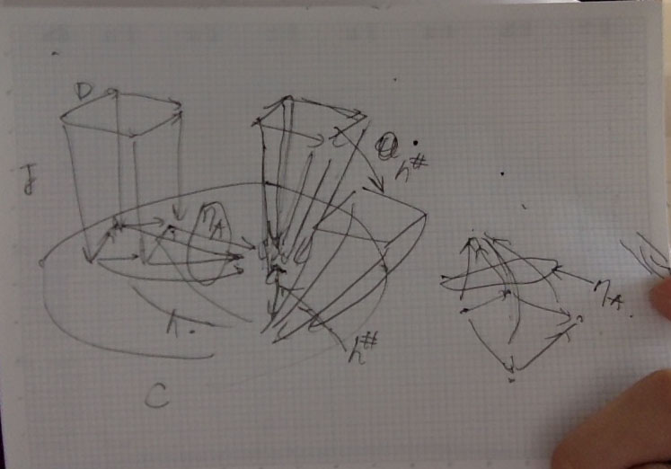
- limit. mapping in
- preserve colimits preserve limit and cone
- cocontinuous. preserve colimits
- continuous. preserve limits
filtered colimit
fix me
adjoint
- if every element of \({\mathcal{C}}\) has an universal arrow, then we can define a reverse functor \(F\), and we can show universal arrows exists in \({\mathcal{D}}\), and another natural transform
- see ref-category-notes for diagram
f| A/B =u_A/u_B= UFA/ UFB | UFf - check preserve id: ok + unique = defined
- check preserve law: think by “moving equal path on graph”
- and the arrows is an natural transform from \({\text{Id}}_{\mathcal{C}}\) to \(F\)
- though we do not know if the initial is unique, we can still define it
- see ref-category-notes for diagram
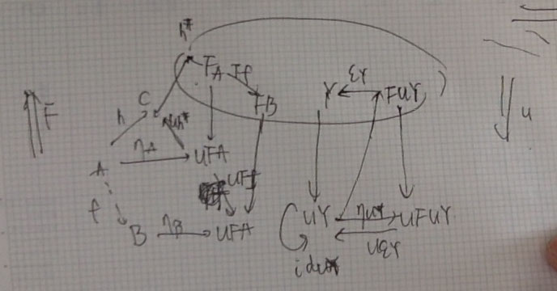
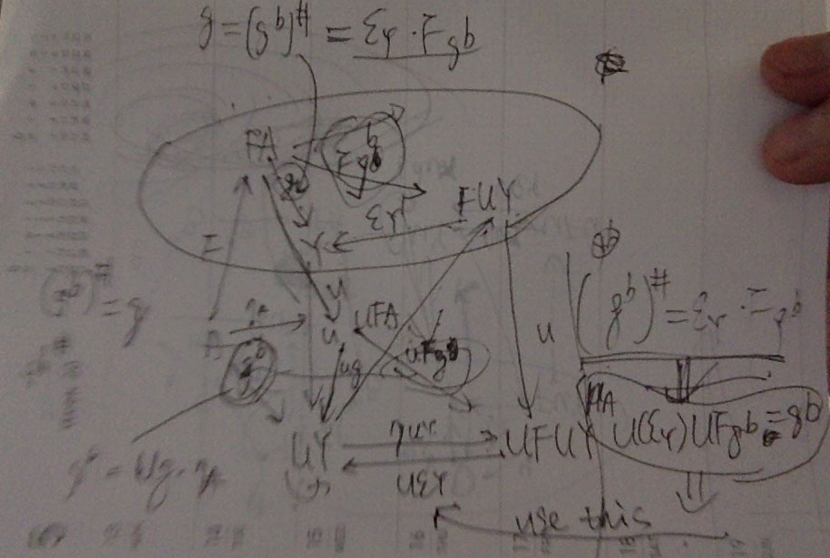
- adjuction of category . \(F\dashv U\), \(U\) is right adjoint, \(F\) is left adjoint
- def a from ref-category-notes for \({\mathcal{C}}\) and \({\mathcal{D}}\), \(F:{\mathcal{C}}\to{\mathcal{D}}\), \(U:{\mathcal{D}}\to{\mathcal{C}}\), a bijection \(\varphi_{C, D}: {\mathcal{D}}(FC, D) \cong{\mathcal{C}}(C, UD)\) such that \(\varphi(k\circ g) = Uk\circ \varphi(g)\) and …
- in Wikipedia, it says that it means optimization
- def b \(\eta:{\text{Id}}_{\mathcal{C}}\Rightarrow UF\) and \(\epsilon: FU\Rightarrow{\text{Id}}_{\mathcal{D}}\) such that the diagram holds
- left adjoint, right adjoint,
- left adjoint is cocontinuous, right adjoint is continuous
fix me
- left adjoint is cocontinuous, right adjoint is continuous
- \(\mathcal{Ab}(F(S), A) \cong\mathcal{S}(S, U(A))\) between the functor take set to freely generated abelian group and the functor that from the group to the set. it means the the morphisms in one category can be fully described by morphisms in another a map from \(S\) to \(U(A)\) fully describe the homomorphisms from \(F(S)\) to \(A\)
- it further generalize equivalence of category by replace natural isomorphism by certain natural transformation
- from nLab we know that we should have a better understanding with higher order category
fix me: when you know higher order category, so i should think moving this section again - adjunction induce two natural transformation . unit of adjunction \(eta: {\text{Id}}_{\mathcal{C}}\Rightarrow UF\) and counit of adjunction \(\epsilon : FU\Rightarrow {\text{Id}}_{\mathcal{D}}\), such that triangular identities holds
- and \(\varphi\) is determined by \(\eta\) and \(\epsilon\)
- adjoint functor determine each other up to isomorphism
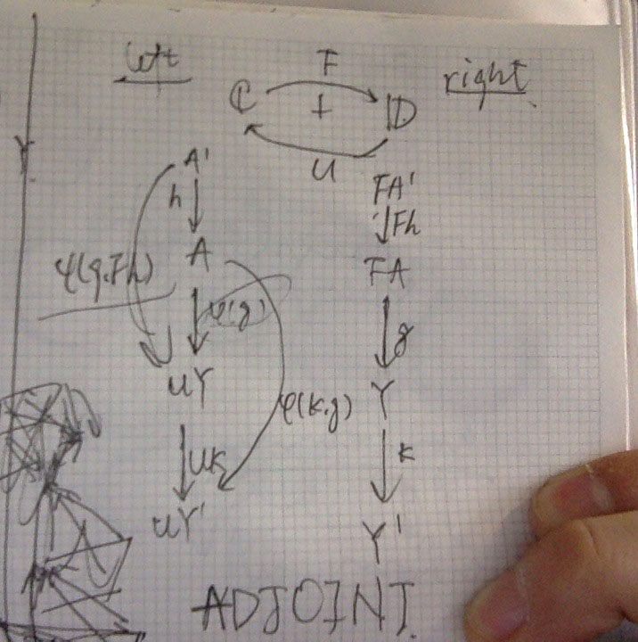
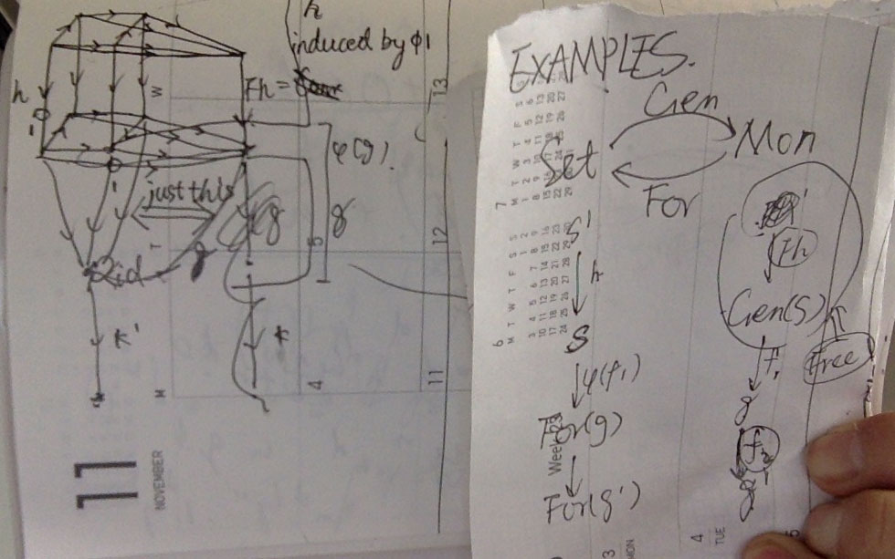
monads
fix me: finish the lecture
abelian category
- additive category
- conditions
- \({\mathcal{A}}(E, F)\) is abelian group
- law of composition is bilinear
- a zero object \(0\), such that \(caa(0, E)\) and \(caa(E, 0)\) has precisely one element
- finite products and finite coproducts exists
- kernel of \(E\xleftarrow{f}F\). a morphism \(E'\to E\) such that \(0\to {\mathcal{A}}(X, E')\to{\mathcal{A}}(X, E)\to{\mathcal{A}}(X, F)\) is exact for all \(X\)
- cokernel of \(f\). a map \(F\to F''\) such that \(0\to {\mathcal{A}}(F'', X)\to {\mathcal{A}}(F, X)\to{\mathcal{A}}(E, X)\) is exact for all \(X\)
- conditions
- abelian category
- conditions
- kernel and cokernel exists
- if \(f:E\to F\) is a morphism with kernel \(0\), then \(f\) is kernel of its cokernel. if \(f: E\to F\) is morphism with cokernel \(0\), then \(f\) is the cokernel of its kernel. a morphism with \(0\) kernel and cokernel is isomorphism
- subobject
- quotient object
- example: vector bundles over a topological space
- conditions
Yoneda lemma
higher category
- 2-category
references
- general category theory
- ref-youtube-category-video http://simonwillerton.staff.shef.ac.uk/TheCatsters
- i understand limit from here
- ref-category-awodey Category Theory, Awodey
- my intro book
- ref-category-notes Category Theory Lecture Notes
- excellent! this will be great for review, but i do not know if one can read this first
- most notes here is adapted from these notes
- ref-category-for Category Theory for Working Mathematician
- ref-youtube-category-video http://simonwillerton.staff.shef.ac.uk/TheCatsters
set
idea
types that has no non-trivial identity, 0-type
as an foundation of mathematics, there are so many ideas expressed using these…
basic set theory
- set, \({\mathcal{Set}}\)
- object. axioms:
- extensionality axiom
- pairing axiom
- union axiom
- power axiom
- function is defined in ZFC using this
- replacement axiom
- infinity axiom
- regularity axiom. has \(\in\)-minimum element
- morphism. function
- image
- isomorphism. bijection
- monomorphism. injection
- epimorphism. surjection
- law of composition . we define here. because usually they are used in classical sense, it is just map \(S_1\times S_2\to S_3\)
- associative \(abc = a(bc)\)
- you can insert any parentheses
- commutative \(ab = ba\) it seems then we must have \(S_1 = S_2 = S_3\)?
- example of non-associative loc: \(-\) for integer
- associative \(abc = a(bc)\)
- product. Cartesian product
- coproduct. disjoint union
- subset
- set limit
- \(\lim\inf A_i = \bigcup_i \bigcap_{j >=i} A_j\), in all but finite
- \(\lim\sup A_i = \bigcap_i \bigcup_{j >=i} A_j\), in infinite sets
- \(\lim A_i\)
- cover
- object. axioms:
- pointed set \(\mathcal{Set}_*\)
ordering
- partially ordered set
- object.
- \(p \nless p\)
- \(p < q \land q < r \Rightarrow p < r\)
- morphism. order-preserving . functions
- \((P, <)\) is a pos, \(X\) a subset
- maximal. \(a\in X\land \forall x :a \nless x\)
- minimal. \(a\in X\land\forall x: x \nless a\)
- greatest element. \(a\in X\land\forall x: x\leq a\), is maximal
- least element. \(a\in X \land \forall x a\leq x\), is minimal
- upper bound. \(\forall x: x \leq a\)
- lower bound. \(\forall x: a \leq x\)
- sup
- inf
- object.
- linear ordering is subcategory of pos
- object
- \(\forall p,q: p < q \lor p = q \lor q < p\)
- morphism
- increasing function which is just order-preserving function
- decreasing function
- strict increasing function
- strict decreasing function
- object
- well ordering is subcategory of linear ordering
- object. linear ordering that every non-empty subset has least
- morphism
- increasing function of well-ordering \(f(x) \ge x\)
- isomorphism. \(W_1\) and \(W_2\) only has unique isomorphism
- no well ordered set is isomorphic to it’s initial segment
- automorphism. the only automorphism is \(id\)
- for \(W_1\) and \(W_2\) or they are isomorphic, or one is isomorphic to other’s initial segment
- initial segment
ordinal
- ordinal number \(\mathcal{Ord}\)
- transitive set. \(T\) such that \(x\in T\Rightarrow x\subset T\)
- ordinal number. transitive set and well ordered by \(\in\)
- \(\emptyset\) is ordinal
- if \(\alpha\) is ordinal, \(\beta\in \alpha\) then \(\beta\) is ordinal
- proof by chaining…
- \(\alpha \subset \beta\Rightarrow\alpha\in\beta\)
- either \(\alpha \subset \beta\) or \(\beta\subset\alpha\)
- define the order by \(<\) is \(\in\)
- … a lot thing
- successor ordinal and limit ordinal
- natural numbers \(\omega\) or \(\mathbb{N}\)
- finite and infinite
cardinal
- cardinal
- what it means by: \(|X| = |Y|\) and \(|X| < |Y|\)
- \(|X| < |P(X)|\)
- \(|A| \leq |B| \land |B| \leq |A| \Rightarrow |A| = |B|\)
- cardinal arith
- \(a + b = |A\cup B|\) disjoint
- \(a \cdot b = |A\times B|\)
- \(a^b = |A^B|\)
- \(|P(A)| = 2^{|A|}\)
- cardinal number. an ordinal such that \(\forall b < a: |a| \neq |b|\)
- finite cardinal
- all aleph is limit ordinal
real numbers
- \(|\mathbb{R}| = 2^{\aleph_0}\)
- continuum hypothesis. \(2^{\aleph_0} = \aleph_1\)
- axiom of choice. for a family of set, exists choice function
- every set can be well-ordered
- Zorn's lemma. every linear subset has upper bound then has maximal element
reference
- ref-set-jech Set Theory, Thomas Jech
algebra
basic objects of algebra
monoid
- monoid \({\mathcal{Mon}}\)
- object \((S\in{\mathcal{Set}}, *:S\times S\to S, e\in S)\)
- unit element \(\forall a\in S: ae = ea\)
- unique. actually, unique in any law of composition with unit
- law of composition. \(abc = a(bc)\), associative
- product of zero element
- product of infinite but almost all zero set
- show that all these products is well defined
- power \(a^n\)
- unit element \(\forall a\in S: ae = ea\)
- morphism. monoid homomorphism
- \(f(e) = e\)
- \(f(ab) = f(a) f(b)\)
- submonoid
- object \((S\in{\mathcal{Set}}, *:S\times S\to S, e\in S)\)
group
- groupoid
- groupoid connected
- can be viewed as connected category, then the groupoid viewed as a category will have skeleton category one element with full isomorphism
- groupoid connected
remark: see this and this for how to think about groups
- group \({\mathcal{Grp}}\) subcategory of \({\mathcal{Mon}}\)
- object
- inverse. \(xy = yx = e\)
- unique
- \(n,m \in \mathbb{Z}\), \(a^n a^m = a^{n+m}\)
- power arithmetic is well defined
- actually left unit and left inverse is sufficient
- inverse. \(xy = yx = e\)
- morphism. group homomorphism inheritance monoid homomorphism, and only \(f(ab) = f(a)f(b)\) is sufficient
- kernel \({\text{Ker }}f\) is a subgroup
- kernel is normal. and normal is kernel. first is trivial by definition. second is by proofing that there is a group structure on the cosets, this is trivial by \(xHyH = xyH\)
- image \({\text{Im }}f\) is a subgroup
- because we know that it contains the unit
- and just from \(f(ab) = f(a)f(b)\) we know that it is closed by multiplication and inverse
- group morphism structure is determined by values on generator. there is two kind of things: group morphism is not defined by values on generator, because it might not be well defined, but it is determined by values on generator, when using this word, we know prior it is a group morphism
- monomorphism
- \(\Leftrightarrow\) kernel is trivial
- as a set function is injective
- injective \(\Rightarrow\) kernel and monomorphism is trivial, kernel to injective by unique inverse, monomorphism to kernel is by considering two map \({\mathbb{Z}}\to C_a\)
- epimorphism
- \(\Leftrightarrow\) surjective
- surjective is certainly epimorphism, a proof for reverse if here, which also works in \(\mathcal{FinGrp}\)
fix me: proof it
- surjective is certainly epimorphism, a proof for reverse if here, which also works in \(\mathcal{FinGrp}\)
- the cokernel is not well defined here, but is well defined for abelian groups
- \(\Leftrightarrow\) surjective
- isomorphism. is bijective . morphism
- isomorphism is monomorphism + epimorphism
- proof. isomorphism is monomorphism and epimorphism so it is bijective. if it is bijective, we can define the inverse map by just function inverse
- morphism and order of group element
- kernel \({\text{Ker }}f\) is a subgroup
- order of group element
- this is kind of like group in algebraic topology, they have something to do with morphisms
- formula for \(|g^m|\)
- the group order divides each other, this is trivial by the index theorem
- in abelian group the max finite order divide each finite order
- proof see exercise in ref-algebra-0, it is by contradiction
- can we proof it using the structure of torsion group?
fix me
- see also cyclic group
- subgroup. inclusion is homomorphism
- or closed
- group multiplication always give an isomorphism as set, multiple by inverse is the inverse map
- coset, left coset, right coset
- proof that it is equivalence relation
- cosets have same cardinality, no matter left or right
- \((G:H)\) index of subgroup the cardinal of cosets
- number of left cosets and right cosets is same, by make a bijection \(aH \to Ha^{-1}\)
- \((G:H)(H:K) = (G:K)\)
- example: group of prime order is cyclic. we should always see what subgroup a group have to determine their structure
- decomposition of group into subgroups \(H\cap K = \{e\}\land HK = G\land hk = kh\) then \(G \cong K\times H\)
- example: \(C_6 = C_2 \times C_3\), with \(C_2 = \{0, 3\}\), \(C_3 = \{0, 2, 4\}\), actually it is not obvious that \(HK = G\), but because it is abelian, \(hk = kh\) is obvious
- normal subgroup \(gN = Ng\)
- closed under intersection
- closed by inverse map, but not morphism!
- normalizer \(N_H\) is a group
- if \(K\subset N_H\) then \(KH\) is a subgroup
- Weyl group \(W_H = N_H / H\)
- smallest index subgroup in finite group is normal
- how to consider this? if you consider what things can be a morphism in group, then you will notice that only when we make the group structure fuzz… kind of. then you want to make certain subgroup into a point, because subgroups has the good property of having boundary of coset. but \(aHbH = abH\) will require that \(aH = Ha\) for it
- index \(2\) subgroup is normal, i think this can be shown quickly by cosets
- Dedekind group every subgroup is normal
- Hamiltonian group. Dedekind group but not abelian group. example: quaternion group
- centralizer of \(S\) \(Z_S\). \(zsz^{-1} = s\)
- of \(G\), center of group is a normal subgroup
- quotient group \(G/H\). and if \(H\) is normal, the result is also a group
- exact sequence of group shape like this: \(>>>>>>\)
- generate \(G = \langle S \rangle\) seems to be the inner structure of a group
- finitely generated
- transposition generate symmetric group \(S_n\)
- free group \(F(A)\). the words thing. on set \(A\). the universal arrow!
- product exists. we show that the product is a group by defining pointwize multiplication, then we define the universal arrow. we show that it is a morphism and it is a product, then we show that it is unique
- canonical embedding into the product
- coproduct. the free product \(G*H\)
- the insertion map must be injective
- and all elements in the coproduct can be expressed as \(i_1(g_1)i_2(g_2)\cdots i_k(g_k)\)
- we can show this only using universal properties. the generated subgroup in coproduct is a subgroup, and we has injections in to the subgroup, then we have an universal arrow from coproduct to this subgroup, which can be viewed as an universal arrow from coproduct to coproduct with image the subgroup, then we have two arrow, the other one is \({\text{id}}\), so the subgroup is the coproduct~!
- consider the category of \((f, G)\) such that \(f: S\to G\) with morphisms group homomorphisms \(\lambda\) such that \(\lambda \circ f_1 = f_2\), a free group is an initial in this category
- free group exists and generated by \(S\), the \(f\) is injective
fix me: this proof is rather dumb... why can't just use the words thing? - \(F(|G|)\to G\), then we see that every group is a factor group of some free group
- coproduct exists
fix me: reason same as above - \(\{G_i\}\) a family of subgroup such that 1. generate \(G\), 2. if \(x=g_{i_1}g_{i_2}\cdots g_{i_k}\) with all \(g_{i_v} \neq e\) and \(i_v \neq i_{v+1}\) then \(x \neq e\) (every words is not \(e\)). then \(G\) is coproduct
- we do not proof it is coproduct, but by show an isomorphism from existing coproduct into it. we define the map by induced by inclusion, it is surjective from 1, and we show the kernel is trivial, if there is an element, because it is generated, we have maps back into \(G_i\), we show that they must all be \(e\), by this we show that it must be represented as \(e\), so it must be \(e\)
- \(A\), \(B\) two groups, we can construct a group with only alternating elements of them. we finally has the words thing!
- we define the finite sequence and restrict to \(\neq 1\) and alternating case, we define the product, the unit element and inverse function, we proof it is associative by induction
- see Wikipedia for more about the category of groups
- we can defined by generator and relations \(G = {\langle S, R \rangle}\) where \(R\subset F(S)\), \(G\) is \(F(S)/N\) where \(N\) is the smallest normal subgroup containing \(R\)
- pushout exists, also called free product with amalgamation, it is by coproduct and take the smallest normal group containing all \(f(a)g(a)^{-1}\)
- initial and finial. the trivial group
- order of group. the definition is somewhat… it is the number of elements
- commutator \(xyx^{-1}y^{-1}\), \(G^c\)
- normal, proof by blablabla
- \(G/G^c\) is commutative, proof by cosets
- all homomorphism into commutative group factor through it, proof by showing that if it maps into an abelian group, then the kernel is contained in it. then using decomposition 1
- simple group. nor-trivial and no normal groups other than \({e}\) and itself
- presentation of group
- finitely presented
- world problem is undecidable…
- finitely presented
- inverse limit given \(\{(G_n, f_n)\}\), the sequences \(x = (x_0, x_1, \dots)\) that satisfy \(x_0 = f_1(x_1)\) etc, form a group
- 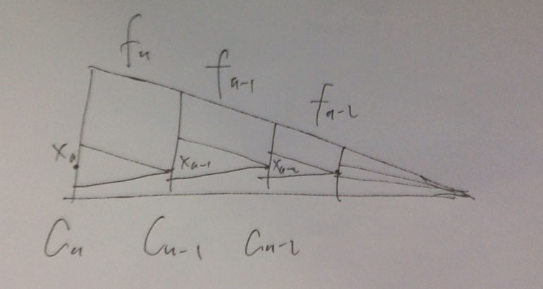
- it can also define on a general directed family of groups
- profinite group inverse limit of finite groups
- Cauchy sequence in group, null sequence in group, completion of group.
fix me: is this completable with norm completion? if it is, read this...
- examples
- symmetric group \(S_n\)
- \((S_n:1) = n!\)
fix me? the section in Lang is not read
- \(({\mathbb{Z}}/p{\mathbb{Z}})^*\) is a group. proof is trivial
- cyclic group \(C_n\). isomorphism to \({\mathbb{Z}}\) or \({\mathbb{Z}}/n{\mathbb{Z}}\), the additive group!!!
- infinite cyclic group has exactly 2 generator
- finite cyclic group has generators the relative prime ones
- let \(p\) relative prime, and \(k\) smallest such that \((a^p)^k = e \Rightarrow (a^k)^p = e\) we show that k must be order of the group, because we do not have such kind of subgroup. if it is not relative prime, we show that it cannot generate
- the automorphisms is fully described by map on generator
- trivial
- if \(p\) is prime, then \((({\mathbb{Z}}/p{\mathbb{Z}})^*, \cdot)\) is cyclic
fix me - and if \(\text{gcd}(m, n) = 1\) \(C_{mn} = C_m \times C_n\)
- to show right is cyclic, we define \(C_{mn}\to C_m\times C_n\), we show that only that… and we show that it is surjective. we are done??
- dihedral group of \(n\) side polygon \(D_{2n}\)
- \(D_6 = S_3\), but normality it is not, because geometry restrictions
- \(D_8 = {\langle \sigma, \alpha| \sigma^4 = \alpha^2 = e, \sigma\alpha\sigma^{-1} = \sigma^3 \rangle}\)
- quaternion group
fix me
- symmetric group \(S_n\)
- remark
- when dealing with finite group, it is just ok to think of what multi table it have
- object
- decomposition of group morphism
- 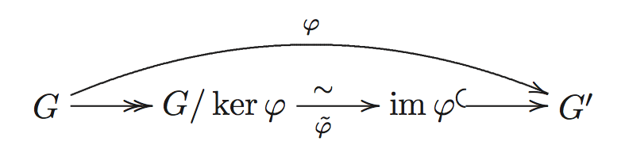
- we define the map by \(aH\to f(a)\) because for all \(y\in H\), \(f(xy) = f(x)\) we see it is a well defined map, then we see that it is a morphism, and it is unique
- \(f: G\to G'\) and \(H'\) normal in \(G'\) then \(f^{-1}(H')\) normal in \(G\) and \(\bar{f}:G/H\to G'/H'\) is injective, if \(f\) is surjective, it is an isomorphism
- we show it is normal. and show it is associative, and injective, by triviality
- decomposition 0 \(\frac{G_1\times G_2}{H_1\times H_2}\cong\frac{G_1}{H_1}\times\frac{G_2}{H_2}\)
- first we proof that \(H_1\times H_2\) is normal, this is trivial, then we show that if \(g_i H_1\) and \(g_j H_2\) then \((g_i, g_j) H_1\times H_2\), we define the map and show it is a morphism, then we show the kernel is trivial and it is surjective, so it is an isomorphism
- decomposition 1 \(\frac{G/H}{N/H}\cong\frac{G}{N}\), \(H\subset N\) normal
- first all \(A/B\) is well defined, then we see that left is well defined. for \(G/H\) and \(G/N\) we define a map \(gH\to gN\), we see that it is a morphism, then we show that the kernel is \(N/H\)
- decomposition 2 \(\frac{H}{H\cap K}\cong \frac{HK}{K}\), \(H\subset N_K\), so \(HK = KH\) is subgroup, and \(H\cap K\) is normal in \(H\)
- proof that \(H\cap K\) is normal in \(H\), \(hk = k_2 h\) and \(k \in H\) so \(k_2 \in H\) so normal. we define the map \(h\to hK\), then we show that it is morphism and it’s kernel is \(H\cap K\)
- this means you have normalizer, you can add/subtract the irrelevant dims to the problem. notice that \(K\) is not always subgroup of \(H\)
- butterfly lemma
- \(U\), \(V\) subgroup of \(G\)
- \(u\), \(v\) normal subgroup of \(U\), \(V\)
- \(\frac{u(U\cap V)}{u(U\cap v)}\cong\frac{(U\cap V)v}{(u\cap V)v}\cong\frac{U\cap V}{(u\cap V)(U\cap v)}\)
fix me
- 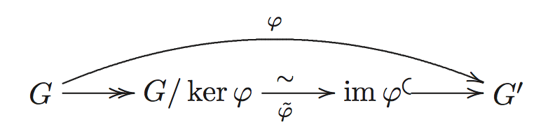
- group towers
- normal tower, abelian tower, cyclic tower
- solvable tower. has an abelian tower
- finite + solvable = has an cyclic refinement
- by induction and using decomposition 2
- \(H\) normal (\(G\) solvable \(\Leftrightarrow\) \(G/H\) and \(H\) is solvable)
- right to left is trivial. \(H\) solvable: construct \(H_i\) like in textbook, we show a normal tower, then we show a morphism, then we show injective then we show abelian. and then we show that \(G/H\) is solvable. we show that \(G_{i+1}H\) normal in \(G_i H\), by \(hg_iG_{i+1}H g_i^{-1}h^{-1} = hG_{i+1} H h^{-1} = hG_{i+1}H = h H G_{i+1} = G_{i+1} H\), then we show that \(G_i H/ G_{i+1}H\to G_i/G_{i+1}\) is injective, 1. show that cosets in left is just \(g_ihHG_{i+1} = g_iG_{i+1}H\) represented by \(g_i\), 2. define the map be \(g_i G_{i+1} H \to g_i G_{i+1}\), then it is morphism, and it is injective, 3. using decomposition 1, we show that it isomorphism to a tower of \(G_i H/ H\) with \(G_0H/H = G/H\) and \(G_rH/H = H/H\), so proofed
- lemma: \(h(H\cap G) = H\cap hG\). it is used to show above injective
- Schreier theorem two normal tower ending with trivial group have equivalent refinements
fix me - Jordan-H\246lder
fix me
- finite group methods
- \(p\)-group. finite group of order \(p^n\) where \(p\) prime
- \(p\)-Sylow subgroup
- finite abelian group \(G\) has subgroup order \(p\) dividing \(|G|\)
- easy if you know facts about finite generated abelian group
- \(p\)-Sylow group exists
- the proof is standard, i think i cannot come up with a proof of this myself, because i am too dumb… just repeat it myself… if \(G\) has order \(p^n\) we are done, so we assume not. we consider proper subgroup of \(G\), if there exists a subgroup \(H\) such that \(p^n\) divides \(|H|\) then we are done, because we can induction. suppose not, then we have in \(|G| = \sum (G:G_x) = |Z| + \sum (G:G_x)\) the right must all dividable by \(p\), so is \(|Z|\). and we can construct a group of order \(p\) in \(Z\). and we can factor it to induction again, and project back and show that the group has order \(p^n\)
- \(H\) a \(p\) group actioning on finite set \(S\), then number of fix points is \(|S|\) mod \(p\)
- using the orbit decomposition formula, \(|S| = \sum (H: H_{s_i}) = |F| \sum (H:H_{s_1})\) the right part must divide \(p\), so \(|S|-|F|\) divides \(p\)
- \(p\) group is contained in some \(p\)-Sylow group
- all \(p\)-Sylow group is conjugate
- number of \(p\)-Sylow group is \(1 \mod p\)
- we follow the proof by Lang. first if \(H\) is contained in normalizer of \(P\), then \(H\subset P\), this is proofed by seeing the prime indexes, we used the condition \(p\)-Sylow as maximal \(p\). the next part is by taking \(S\) all conjugate class of \(P\) in \(G\), then we have \(|S|\) is not divisible by \(p\), then we have \(H\) also operate on \(S\) and it cannot have one fixed point, which means it is contained in some \(aPa^{-1}\). by taking \(H = aPa^{-1}\) we show that it is in \(S\). and \(H\) has only one fixed point, showing that mod 1.
- the proof is essentially number theoretic, so the particular group structure is caused by finiteness and number theory
- \(p\)-group has non-trivial center, thus solvable, and also has cyclic tower
- it is again a trivial application of class formula
- smallest prime index group is normal
- proof: if \(N_H=H\) we have \(G\) operates on \(G/H\) and so we have a subgroup into a group of order \(p!\) and we show that the kernel must be \(H\), i.e. \(hgHg^{-1}h^{-1} = gHg^{-1}\Rightarrow g^{-1}hg \in H\)
- order \(pq\), \(p\neq q\) and primes, then solvable. trivial by above lemma
- abelian group \({\mathcal{Ab}}\)
- object. commutative . group
- morphism
- example: \(n\) power map exists, because commutative, the deeper result is that abelian group is essentially an module over \({\mathbb{Z}}\)
- homomorphism in \({\mathcal{Ab}}\) is again a abelian group
- product. finite case is direct sum
- coproduct. direct sum \(G\oplus H\), only finite non zero
- proof that is is coproduct. we should be using a infinite sum now, and etc.
- pullback. is the subgroup of \(A\times B\) such that \(f(a) = g(b)\)
- structure of free abelian group \(F^{ab}(A)\). \(\bigoplus_{i\in A} {\mathbb{Z}}_i\)
- base non-empty and \(A\) is unique expressed \(x =\sum x_i e_i\) for \(x_i\in {\mathbb{Z}}\) almost all zero
- the adjunction
- \(f:A\to B\) surjective and \(B\) is free, then we can find \(C\) free such that \(A = {\text{Ker }}f \oplus C\)
- proof using base
- subgroup is also free abelian group, and has smaller cardinal base
- when the space is finitely generated,
fix me
- when the space is finitely generated,
- structure of torsion element forms a torsion group. \(A = \bigoplus _p A(p)\) where \(A(p)\) is the subgroup of elements of order \(p^n\). not necessary finite
- we proof by showing the map in surjective, injective by showing the kernel is trivial. surjective using the relative prime decomposition
- abelian \(p\)-group isomorphism to product of cyclic \(p\)-groups
fix me
- an easy exercise. a non cyclic finite abelian group must contain some \(C_p\times C_p\)
- proof by above. suppose not cyclic, if there must be multiple \(A(p)\) and one of them has multiple \(p\)-group, because if it is \(p\)-group and not cyclic, it must has multiple cyclic decomposition, and we can pick a \(C_p\times C_p\) in it. so it must contain multiple \(A(p)\), if it everyone has one \(p\)-cyclic group, then itself is cyclic. so one of them must contain multiple \(p\)-cyclic group. proofed again
- proof by hand. i do not want to proof again, this is basically the relative prime thing
- finitely generated abelian group \(A = A_{\text{tor}}\oplus B\) where \(B\) is free
- finitely generated torsion abelian group is finite
- proof is trivial
- finitely generated torsion-free abelian group is free
fix me
fix me- rank of \(A\)
- an example of abelian group that do not has this structure is \({\mathbb{Q}}\), here, it is torsion-free but not free. same for \({\mathbb{R}}\) because it has one non-free subgroup
- finitely generated torsion abelian group is finite
- dual group. for \(A\) of exponent \(m\), \(A^*\)
- for \(A\), \(B\) of same exponent \(m\), \(f: A\to B\), we define \(f^*:B^*\to A^*\) by \(f^*(\chi) = \chi \circ f\)
- \({\text{id}}^* = {\text{id}}\)
- \((f\circ g)^* = g^*\circ f^*\)
- \((A\times B)^* \cong A^*\times B^*\)
- the dual things is a special case of a module, study it there
group action
- a left action of group \(G\) on \(A\) in category \({\mathcal{C}}\), is a morphism \(\sigma:G \to {\text{Aut}}_{\mathcal{C}}(A)\)
- alternative on \(S\in {\mathcal{Set}}\)
- \(es = s\)
- \(gfs = (gf) s\)
- this is auto automorphism! group has inverse!
- faithful action when we view group as an single element category, it is just faithful
- conjugate subgroup \(B = xAx^{-1}\)
- the kernel this map is center
- there are a lot of automorphism that is not working by conjugation!!
- isotropy of point \(s\), \(G_s\). \(\{g|gs = s\}\)
- isotropy groups is conjugate if \(\exists gs = s'\)
- so faithful action’s isotropy is always \(\{e\}\)
- fixed point of group action \(s\) such that \(G_s = G\)
- orbit of \(s\), \(Gs\)
- transitive action , \(\forall s, s', \exists g: gs = s'\) or group is single orbit
- if \(H\) is subgroup, then \(G/H\) is transitive \(G\)-set (by \(G\)-set we means an action)
- alternative on \(S\in {\mathcal{Set}}\)
- \(|Gs| = (G:G_s)\)
- number of conjugate group of \(H\) is equal to \(G:N_H\)
- orbit decomposition formula \(S = \bigcup Gs_i\) then \(|S| = \sum_{i\in I} (G:G_{s_i})\), \(s_i\) is representative of different orbit
- class formula \((G:1) = \sum (G:G_x)\), taken from different conjugate classes. consider \(G\) action by conjugate on \(G\) viewing as an set, then… for example, when \(z\) is in center, \(G_x = G\) because all \(xzx^{-1} = z\), and it’s orbit is just \(z\)
- category of \(G\) sets
- object. \(S\)
- morphism. function \(f\) such that \(f(gx) = g(f(x))\)
- automorphism of \(G\)-set. \(G\) act transitively on \(S\), \(s\in S\), \(W_{G_s}\) is isomorphic to \({\text{Aut}}_G(S)\) of automorphism of \(G\)-set \(S\)
- category \(\mathcal{O}(G)\) of canonical orbits
fix me: reread this para in May- object. \(G/H\)
- morphism. \(G\)-maps of them
- \(\alpha: G/H\to G/K\) has form \(\alpha(gH) = g\gamma K\) where \(\gamma\in G\) satisfies \(\gamma^{-1}h\gamma \in K\) for all \(h\in H\)
- the category \(\mathcal{O}(G)\) is isomorphism to \(\mathcal{G}\) with objects subgroups of \(G\) and morphisms distinct subconjugacy relations \(\gamma^{-1}H\gamma\subset G\) for \(\gamma\in G\)
- groupoid action \(T:\mathcal{B} \to \mathcal{Set}\). it is kind of taking the results of path in base space into results of end point in covering space
- for each \(b\) in \(\mathcal{B}\), \(T\) restricts to an group action on \(T(b)\)
- transitive groupoid action. if for each \(b\), it is an transitive action
- for groupoid connected groupoid, if this is true for one, then true for all. because groupoid is an category with only isomorphism
exercises
- for 1, 2, 3, 5, cyclic. for 4, we can show an non-abelian group must contain at least 5 elements \(\{e, a, b, ab, ba\}\)
- because it is abelian, it is cyclic or contains \(C\times C\)
- proofed above
- from the isomorphism
- Goursat's lemma. we show normal by analysis components. then we show that there is an morphism \(G\to G'/N'\) which is constructed by taking the cosets of \(H\) and map back by the cosets, the map is well defined because left is surjective and because you can check for associative. we can see that the kernel is exactly \(N\). and we show it is isomorphism by showing it is surjective by using right is surjective. this is a rather wired proof
- trivial
*see the proof in ref-algebra-course, the main thing is that every conjugate is an automorphism, but what actually conjugate means is not touched- it is certainly union of, so we proof for disjoint. we show that if one element in common, then \(HxH' = HyH'\). the second part and the third part is not proofed. the goddam misprinting!!!!. a proof see ref-algebra-course
- follow the hint. \(N\) is easy to find, and finite is easy to proof. second part is by reduce to normal case, and show that \(N\times N'\) is kernel into some finite group
- proofed above
fix me: do not understand how to construct, if it is like in 12, then what's the point of abelian?- semidirect product trivial or lazy…
fix me: the properties of semipoduct as limit? - \(H\), \(N\) normal, then \(hn = nh\) and \(H\times N\cong HN\). the second part is trivial, we proof \(xy = yx\) by first show that every element in \(HN= NH\) has unique decomposition \(xy\) and \(yx\), then if \(xy = y'x = x'y'\) we have \(x = x'\) and \(y = y'\) so \(xy = yx\)
- the first part can be shown by calculate the order of \(NH\) which must be \(|G|\). the second part is by assuming \(K = g(N)\neq N\) then \(KN\subset G\) then \((G:N) = |G|/|N| > |KN| / |N|\) cannot relative prime to \(|N|\)
*i didn’t make it out myself, see ref-algebra-course. you have \(|\bigcup G_s| \leq \sum |G_s| = |G|\) and the left is not disjoint. the right part about finite one orbit action should be remembered- assume \(\{a_i\}\) is an coset representative, then \(\bigcup_{x\in G} xHx^{-1} = \bigcup_i \bigcup_{x\in a_iH}xHx^{-1} = \bigcup_i a_iH a_i^{-1}\), because \(G = \bigcup_i a_i H\), left is not disjoint union, and right is disjoint union, so…
- for kindergarten?
- same above?
- the number of orbit of \(G\) actioning on \(S\) is the average number of fix points of an element of \(G\)
*the proof is by \(P\) actioning on \(A\), the number of fix points equal \(p\) mod \(p\) then there should be \(p\)- a \(p\)-Sylow group of \(H\) is a \(p\) group of \(G\) and then it is contained in a \(p\)-Sylow group of \(G\), \(P\), we should proof that \(P_H = P\cap H\), certainly \(P_H\subset P\cap H\), we should proof that \(P\cap H\) is a \(p\)-group, thus \(P\cap H=P_H\) by cardinality. this is a easy fact
- all \(p\)-Sylow group is conjugate
- \(P\), \(P'\) two \(p\)-Sylow group
- \(P'\subset N_P\Rightarrow P' = P\). because it is Sylow subgroup!
- \(N_{P'} = N_P\Rightarrow P' = P\). \(P'\subset N_{P'}\)
- \(N(N(P)) = N(P)\). we suppose \(a N_P a^{-1} = N_P\) then \(P\) is mapped into a conjugate subgroup of \(N_P\) but we know that there is one, so \(aPa^{-1} = P\) so \(a\in N_P\)
- a group of order \(p^2\), has a subgroup of center of order \(p\), so the cosets is cyclic and generated by some \(aP\), and thus all elements of \(G\) is some \(a^ip^j\), and it is abelian. we consider the max order of elements of \(G\), if it is \(p^2\) then \(G \cong C_{p^2}\), if it is \(p\), then we have all none \(e\) elements have order \(p\), and we have \(G\cong C_p \times C_p\)
- we use same trick as above
- it is not abelian, and normal is easy because smallest prime index
- this is easy
- fixed points, show it is abelian
- trivial
- group of order less than 60 is solvable. first, \(p\neq q\) is solvable. and \(p^2\) is abelian. and \(p^n\) is solvable. \(pqjkq\) solvable
- for \(p^2q\) with \(p < q\) we have \(q\)-group exists, and it is normal, and then it is cyclic, and then we have the factor group cyclic, thus solvable
- and by 28, we know that all \(p^2q\) is solvable, and one Sylow subgroups is normal
- so we actually only need to proof for \(24 = 2^3 3\), \(36 = 2^2 3^2\), \(40=2^3 5\), \(48 = 2^4 3\)
- by \(p^3q\) we have \(36\), \(48\) remains, proofed
- you show it should be a group of order \(12\) and have 3 \(2^2\)-Sylow group, and 4 \(3\)-Sylow group. then you show that it is not ok, because you have 8 elements of order 3, and you only got 1 \(4\)-Sylow group
- you can proof a similar result for \(p^3q\) which will result in group of order \(24\), with 4 \(3\)-Sylow and 3 \(2^3\)-Sylow group, you proof that if it is the case, then all element is in some Sylow subgroup, which cannot be
- trivial
- we can proof using the same think for \(p^4q\), \(p^2p^2\), reduce always to the case of \(2\) and \(3\)
- Burnside theorem. link
- by 28
- isomorphism groups of group order leq 10. 1-5 is already done by exercise 1. 7 is prime, 9 is by 24
- we have group of order 3 is normal so, assume \(a^2 = e\) and \(b^3 = e\) is the generators. we have \(aba^{-1}= b\) or \(aba^{-1} = b^2\). the first case produce the cyclic group of order 6. the second is a valid group
- if the max order is 8, you have \(C_8\), abelian. if max order is 4. then this subgroup is normal. we have all our elements then we calculate? link. if max is 2, we have it is abelian, and it should be \(C_2\times C_2\times C_2\), it is abelian
- we have group of order 5 is normal…
fix me
fix mefix mefix me- see 31
fix mefix mefix mefix mefix mefix me- trivial
- that \(H\) a subgroup of abelian group \(G\) then there is a subgroup isomorphism to \(G/H\)
- can you really do this by picking representatives?
fix me
- can you really do this by picking representatives?
- trivial
fix mefix mefix mefix mefix me
fix me
ring
- ring \({\mathcal{Ring}}\)
- object
- abelian group on \(+\)
- monoid \(\cdot\)
- distributive \((r+s)t = rt + st\)
- properties
- \(0r = r0 = 0\)
- there are many things without \(1\), for example \(2{\mathbb{Z}}\)
- zero ring
- left unit of ring. has right inverse, right unit of ring. has left inverse, unit of ring \(A^*\), invertible elements of \(A\)
- \(u\) left unit of ring \(\Leftrightarrow\) left multiplication by \(u\) is surjective
- proofed easily
- \(u\) left unit of ring \(\Rightarrow\) right multiplication is injective, and so is not right zero divisor
- left unit of ring is not always unique, but unit of ring is unique
- shift operator. bad example~!
- units is a group
- in \({\mathbb{Z}}\) we have \(-1\) and \(1\) is unit!!! not only \(1\)!!!
- \(u\) left unit of ring \(\Leftrightarrow\) left multiplication by \(u\) is surjective
- left zero divisor \(a\) such \(\exists b: ab = 0\), right zero divisor
- nilpotent \(a^n = 0\) is zero divisor
- \([2][3] = [0]\)
- not left zero divisor \(\Leftrightarrow\) left multiplication is injective
- proofed easily
- morphism. \(f(a + b) = f(a) + f(b)\), \(f(ab) = f(a)f(b)\), \(f(1) = 1\)
- \({\text{Im }}f\) is subring
- monomorphism
- \(\Leftrightarrow\) \({\text{Ker }}f = \{0\}\)
- injective
- epimorphism is not necessary surjective
- so monomorphism and epimorphism is not necessary isomorphism
- isomorphism
- bijective \(\Rightarrow\) isomorphism
- \(\lambda: R\to {\text{End}}_{{\mathcal{Ab}}}(R)\), is injective ring homomorphism
- initial. \({\mathbb{Z}}\)
- characteristic of ring
- for field \(K\), the characteristic \(0\) fields contains an image of \({\mathbb{Q}}\) and for characteristic \(p\) contains some isomorphic image of \(F_p\). smallest subfield contains \(1\) and has no trivial automorphism. and prime ring we means \({\mathbb{Z}}\) or \(F_p\) in it
- subring. additive subgroup, contains \(1\), closed by \(\cdot\)
- example. center of ring, viewed as multiplication group, the center
- \(B = A[S]=\sum as^is^j\cdots s^k\) with \(A\) commutate with \(S\), \(S\) is a set of ring generators of \(B\) over \(A\). if \(S\) is finite, we say that \(B\) is finitely generated over \(A\)
- product exists and is like group product. the inclusion map is not ring homomorphism, though in group this is true
- coproduct see Wikipedia
- left ideal additive subgroup and \(A\alpha\subset \alpha\), right ideal \(\alpha A = \alpha\), ideal \(\alpha = A\alpha = \alpha A\)
- ideal is submodule of the ring
- ideal is kernel, kernel is ideal
- we define \((x + \alpha)(y + \alpha) = (xy + \alpha)\) we show that it is well defined, we show that it is representative independent, and it is associative hand has unit, and distributive. we used \(xa \in\alpha\) in the proof that it is well defined. just like the normal group case… this is wired
- the unit of the cosets is \(1+\alpha\) and the zero is \(\alpha\), this is because it is an ideal and it is kind of like a zero which takes everything back
- \(\alpha \cap \beta\) is ideal. same for any index
- for ideals, \(\alpha\beta = \{x_1y_1 + x_2y_2 + \cdots+ x_ny_n\}\) is an ideal
- it forms a groupoid, with unit \(A\)
- same for left ideals
- \(\alpha + \beta\) viewed as normal additive subgroup is left, right two sided ideal
- and we have \(\beta(\alpha_1 + \alpha_2) = \beta\alpha_1 + \beta\alpha_2\)
- \(\alpha \cap (\beta_1 + \beta_2) = \alpha\cap \beta_1 + \alpha\cap \beta_2\) if \(\alpha\subset \beta_1\) or \(\alpha \subset \beta_2\)
- principal ideal \(Aa\), twosided principal \(AaA\)
- generators for ideal is a left ideal \(x_1a_1 + x_2a_2 + \cdots + x_na_n\) with \(x_i\in A\) is generated by \((a_1, a_2,..., a_n)\)
- intersection closed for left, right, twoside
- an ideal contains \(1\) must be \(A\)
- \(p = f^{-1}(p')\) is ideal
- my proof is always lame, see this. i should have more this kind of thinking, when i want to proof that something has some property, i just proof it has the property, but the better thing is always force it to have the property, because it not only show the result, but also that why it has the property
- quotient ring
- in Atiyah’s words. there is a order-isomorphism between ideals contains \(\alpha\) and ideals of \(A/\alpha\)
- 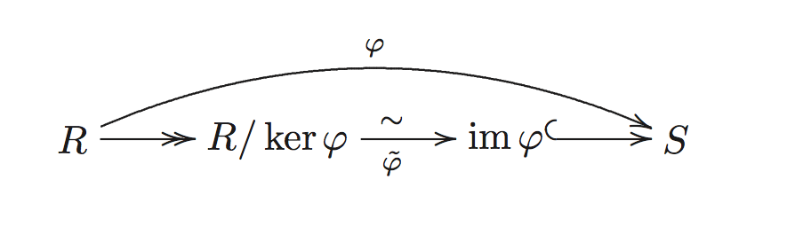
- and another thing is that the factor thought things, and it is universal
- \(\frac{R/I}{J/I} = \frac{R}{J}\)
- we can form \(G/p\hookrightarrow G'/p'\) just like in group
fix me: is this true - commutative ring
- division ring \(1\neq 0\) and ever element invertible
- principal ring every ideal is principal ideal
- object
- commutative ring. a commutative ring…
- ideal in commutative setting
- \(\alpha \beta \subset \alpha\cap\beta\)
- \((\alpha+\beta)(\alpha\cap \beta)\subset\alpha\beta\)
- you get \(=\) when \(\alpha + \beta= A\), or say coprime. proof by that \(a + b = 1\) then \(c\in \alpha\cap \beta\) then \(ca + bc = c(a+ b) = c\)
- if \(\alpha_i\) all coprime, then \(\prod \alpha = \cap \alpha\)
- \((4)\cap (3) = (12) = (4)\cdot (3)\)
- \((4)\cap (6) = (12) \neq (24) = (4) \cdot (6)\)
- decomposition of commutative ring into quotient rings define \(\phi: A\to \prod A/\alpha\)
- \(\phi\) surjective \(\Leftrightarrow\) all coprime
- proof it
- \(\phi\) injective \(\Leftrightarrow\) \(\cap \alpha = (0)\)
- \(\phi\) surjective \(\Leftrightarrow\) all coprime
- prime ideal \(R/p\) is entire ring
- same as saying that \(xy \in p\) then \(x\in p\) or \(y\in p\)
- \(\alpha \subset\cup p\Rightarrow a\subset p_i\)
- \(\cap \alpha \subset p\Rightarrow a_i\subset p\)
- \(\cap \alpha = p\Rightarrow a_i= p\)
fix me
- maximal ideal \(I \neq R\) and not contained in any ideal
- maximal ideal is prime ideal
- if \(x\notin m\) then we have \(m+Ax\) contains \(m\), and is an ideal, so \(m+Ax = A\), so we have \(1 = u+ax\) so we proof that \(y\) is in \(m\). the thing is always about \(1\) and the structure of the ideal
- an nontrivial ideal is contained in some maximal ideal
- we show that the ideals containing \(a\) is a partially ordered, and linear ordering has maximal, then we use Zorn’s lemma
- \(\Leftrightarrow\) \(R/m\) is a field
- we proof by using again \(m+Ax\) and find the inverse of \(x\). the reverse is because a field has no good proper ideal in it. if we have \(m\subset n\) then we can factor \(n\) by \(m\), and it has no ideal in it at all!
- actually it is in same spirit of the proof that a field has non trivial ideals. but in complexer language
- maximal ideal is prime ideal
- morphism preserve prime ideal, but not maximal ideal, or in detail
- for \(f: A\to A'\) is an homomorphism of commutative rings, \(p'\) then \(A'\) then \(p = f^{-1}(p')\)
- for \(f: A\to A'\) surjective, if \(m'\) then \(m\). proof using field
- is is rather evident in spirit of the decomposition theorem
- nilradical \({\mathscr{N}}\) all nilpotents
- is a ideal, and \(A/{\mathscr{N}}\) has no nilpotent
- \(\Leftrightarrow\) \(\bigcap p\)
- left to right is trivial. we need proof that non-nilpotent is not in some prime ideal. we proof by showing that all ideals such that \(f^n\notin \alpha\) has a maximal element and it is prime
- Jacobson radical intersection of all maximal ideal
- \(\Leftrightarrow\) \(1-xy\) is unit for all \(y\). the proof reminds me of the \(1-m\) thing
- radical \(\alpha\) is an ideal of \(A\), \(r(\alpha) = \{x^n\in \alpha\}\)
- it is an ideal, because it is \(\phi^{-1}({\mathscr{N}}_{A/\alpha})\)
- \(r(a)\supset a\), \(r(r(a)) = r(a)\), \(r(ab) = r(a\cap b) = r(a)\cap r(b)\), \(r(a) = A\Leftrightarrow a = A\), \(r(a + b) = r(r(a) + r(b))\), \(p\) prime then \(r(p^n) = p\)
- all trivial
- it is the intersection of prime ideals containing \(\alpha\)
- \(r(a)+r(b) = A\Rightarrow r(a+b) = A\Rightarrow a+b = A\)
- ideal quotient \((\alpha:\beta) = \{x\in A: x\beta\subset \alpha\}\)
- \({\text{Ann}}(\beta) = (0:\beta)\) the annihilator
- \((a:b)b\subset a\), \(((a:b):c) = (a:bc) = ((a:c): b)\), (a: b) = (a:b)\(, \)(a: b) = (a:b)$
fix me
- extension \(\alpha^e = Bf(\alpha)\), contraction \(\beta^c = f^{-1}(\beta)\)
fix mefix me
- Chinese remainder theorem given \(\alpha_i\) ideals of \(A\) such that \(\alpha_i+\alpha_j = A\), and \(x_i\in A\) we have \(x\in A\) and \(x\equiv x_i(\mod a_i)\)
- we proof by induction, this is kind of induction that reduce length. the key is that \(\alpha_i \prod_{i\geq 2}\alpha_i\subset \alpha_1 + \alpha_2 \cdots\alpha_n= A\). thne we can reduce to 2 case
- application example. \({\mathbb{Z}}/n{\mathbb{Z}}\cong {\text{End}}(C_n)\) ring isomorphism, \(({\mathbb{Z}}/n{\mathbb{Z}})^*\cong {\text{Aut}}(C_n)\) group isomorphism
- if \(\sum \alpha_i = A\) then \(\sum \alpha_i^{v_i} = A\)
- we use same kind of induction, we just proof for \(\alpha^v + b\) case, using \(a_1^v = (1-b_1)^v = 1 + b\), this is easy. one interesting problem is that observe how the elements that add up to \(1\) changed. sometimes watching the given condition and figure out how to use them it very important
- local ring commutative and has unique maximal ideal
- \(\Leftrightarrow\) if \(x\notin m\) then \(x\) is unit. proof by \(Ax = A\), and every ideal is in a maximal ideal, which is just the one
- \(\Leftrightarrow\) a ring and a maximal ideal such that \(1+m\) is unit
- we show that every \(A-m\) has some \(xy = 1-m\) is unit, then \(xyz = 1\) so \(x\) is unit
- semi-local ring finite ideal
- ring of fractions of ring \(A\) by multiplicative submonoid \(S\), \(S^{-1}A\)
- \((a,s)\sim(a',s')\Leftrightarrow s_1(s'a-sa') = 0\), by \(a/s\)
- we define \((a/s)(a'/s') = aa'/ss'\)
- \(\frac{a}{s} +\frac{a'}{s'}=\frac{s'a+sa'}{ss'}\)
- we proof it is a ring
- additive group
- \(+\) is well defined. proof by calculation
- associative. \(\frac{as_bs_c+s_abs_c+s_as_bc}{s_as_bs_c}\)
- unit, inverse. trivial
- multiplicative monoid. trivial
- distributive. trivial
- additive group
- if \(0\in S\) then \(S^{-1}A = \{0/1\}\)
- \(\varphi_S: A\to S^{-1}A\) such that \(a\to a/1\), and every element in \(\varphi_S(S)\) is invertible, by \(1/s\), and this is universal in such morphisms (making \(S\) invertible!!!, it is an initial, and this means factor though, so what we should do is find the unique initial map that is induced by the actual map). proof by for such a \(f:A\to B\) we have \(f(s_1)(f(s')f(a)-f(s)f(a'))=0\) to we have \(f(a)f(s)^{-1}=f(a')f(s')^{-1}\) if we send \(a/s\) to \(f(a)f(s)^{-1}\) it is well defined and it is homomorphism and commutative, and unique
- if \(A\) is entire and \(S\) do not contains \(0\) then \(\varphi_S\) is injective
- \(S\) is non-zero elements, then we have quotient field of \(A\) and it is an field
- \(K(X_1, \dots, X_n)\) the quotient field of \(A[X_1, \dots, X_n]\), rational function
- rational function defined at \(b\)
- local ring at a prime ideal \(S^{-1}A\) called local ring \(A\) at \(p\) where \(S=A-p\)
- proof. we see that \(S\) is a multiplicative submonoid, by the definition of prime ideal. we see that \(a/s\) is a maximal ideal. it is an ideal, by it has unit, and additive group, and that closed as an ideal. we see that it is maximal by suppose there is an \(m\subset m'\), then we have \(x\in m'\land x\notin m\) then \(m+(x)\subset m'\), we proof it is actually \(A\). \(x\) must be some \(s_1/s_2\), so we have \(m'=Am'=A\frac{s_2}{s_1}m'\supset A\)
- we can define \(\psi_S:J(A)\to J(S^{-1}A)\) and it is homomorphism, and preserve intersection and inclusions
- proof is trivial
fix me
- proof is trivial
- Noetherian. commutative ring and every ideal is finitely generated
- entire ring nonzero commutative ring without zero divisor
- for an entire ring, \(a\), \(b\) nonzero elements in \(A\), then \(a\), \(b\) generate same ideal iff exists unit \(u\) such that \(b = au\)
- unit for \(Ab = Aua = Aa\), because if it is not unit, we do not know if the right equation holds
- \(Ab = Aa\) then \(a = bc\) and \(b = ad\) then \(a = adc\) and \(dc = 1\), entire is used here
- for an entire ring, \(a\), \(b\) nonzero elements in \(A\), then \(a\), \(b\) generate same ideal iff exists unit \(u\) such that \(b = au\)
- in entire ring
- \(ab\neq 0\), \(a\) divides \(b\), or \(a|b\) (left is small!) if \(\exists c\in A: ac = b\)
- greatest common divisor \(d\) of \(a\), \(b\) if it divides \(a\) and \(b\) and every one how divides them also divides \(d\)
- lemma p for entire ring \(p\) irreducible and \(p|ab\) then \(p|a\) or \(p|b\). proof, suppose \(p\) do not divides \(a\) then we have \(1 = xp+ya\), so we have \(p|bxp + yab = p|b\)
- least common multiple
- relatively prime
- irreducible element not unit but when \(a = bc\) then \(b\) or \(c\) is unit
- \((a)\) is prime ideal \(\Rightarrow\) \(a\) is irreducible
- unique factorization into irreducible elements \(a = u\prod p_i\)
- \(p\) irreducible and \(u\) unit then \(up\) irreducible. proof by proofing…
- example: prime number in \({\mathbb{Z}}\)
- we have defined factorial ring if it is entire ring and has unique factorization into irreducible elements for every nonzero element
- order of elements in factorial ring order \(a\) at \(p\)
- example of non-factorial ring \(\sin^2 x = (1+ \cos x) (1-\cos x)\)
- Dedekind ring. an entire ring such that every nonzero proper ideal factors into a product of prime ideals
- principal entire ring . entire ring and every ideal is principal ideal
- \((a, b) = (c)\) then \(c\) is gcd of \(a\) and \(b\). proof by definition
- is Noetherian. trivial
- it is factorial ring
- i think this is an rather interesting proof, i wish i could proof it myself… consider an chain of non-unique factorization principal ideals, the union is an ideal, so it is principal proof enabler!!!, so we have it must stop somewhere. so using Zorn’s lemma we so have \((a)\) containing all of them. \(a\) must not be irreducible, so we have \(a = bc\) with \(b\), \(c\) not unit. but a factorization of \(b\) and \(c\) is a factorization of \(a\), so we are dammed. the uniqueness is followed by assuming we have to factorization and we reduce by using lemma p for entire ring, we find \(p = uq\), and reduce
fix me: is there a constructive proof?http://mathoverflow.net/questions/24556/factorial-rings-and-the-axiom-of-choice
- every prime ideal is maximal ideal. proof by assuming \((x) \subset (y)\), then \(x = yz\) then \(z = kx\) then \(x = yz = ykx\) then \(yk = 1\)
- example: \({\mathbb{Z}}\)
- Euclidean ring
- every Euclidean ring is pid
- field. commutative . division ring
- \(\Leftrightarrow\) has no non-trivial ideal
- \(\Leftrightarrow\) every morphism in \({\mathcal{Ring}}\) is injective
- we find a non-unit, and form a proper ideal, then take \(A/(x)\), we have injective, so \((x) = 0\), we have \(x = 0\)
- ideal in commutative setting
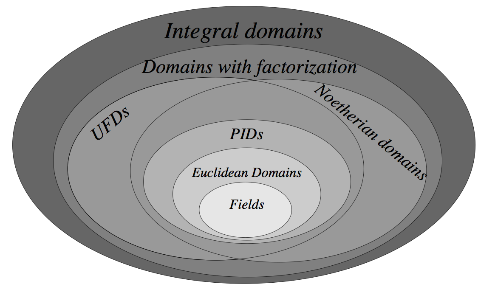
- \(R\)-algebra. a ring homomorphism from a commutative ring \(\alpha: R\to S\) such that \(\alpha(R)\) is contained in the center of \(S\)
exercises
- we inspect an ideal \(\alpha\) if there exists \(xy\in \alpha\) and \(x\notin \alpha\) and \(y\notin\alpha\) then \(x\) and \(y\) cannot both in \(S\), because then \(xy\in S\), so we have \(\alpha + (x)\) is bigger than \(\alpha\) so if it is maximal. so we have it
- this is easy, we have easily an isomorphism of fields, and then we proof using \(p'\) that every ideal is contained in \(m'\)
- proofed above
- \(A\) principal then \(S^{-1}A\) principal. it is really trivial, if you think
- we show that the they are prime, and give the factorization
- trivial
- trivial
- trivial
- trivial
- trivial
- trivial
- trivial
fix me
module
please have a picture of abelian cosets!!!
- module \(R\)-\(\mathcal{Mod}\)
- object. (left) \(A\)-module \(M\)
- \(M\) an abelian group
- \(A\) a ring and operate on \(M\) (as multiplicative monoid)
- \(\forall a, b\in A, x, y\in M: (a+b)x = ax + bx \land a(x+y) = ax + ay\)
- we have
- \(abx = a(bx)\)
- \(0x = 0\)
- \(a0 = 0\)
- \(1x = x\)
- \(a(-x) = -ax\)
- example
- \(R\) is module over itself
- all abelian group is module over \({\mathbb{Z}}\)
- left ideal of \(A\) is module over \(A\)
- factor ring is an module over \(A\)
- so module is just ring operation that additionally has the latter equation?
- let \(R\) be the ring of linear map over vector space \(V\), then \(V\) is a module over \(R\) remember this, seems useful
- morphism or \(A\)-linear map
- additive homomorphism, \(f(m + n) = f(m) + f(n)\)
- \(f(ax) = af(x)\)
- kernel is submodule and submodule is kernel
- for a kernel, it is a additive subgroup, and we have \(f(an) = af(n) = 0\) so it is a submodule
- we have \(f:M\to M/N\) the universal module-homomorphism. proof, the group-homomorphism has the additional property, we get universal by making the map
- \({\text{Im }}f\) is submodule. proof by \(af(m) = f(am) \in {\text{Im }}f\)
- \(M' \to M'/{\text{Im }}f\) cokernel
- decomposition 1 etc. holds. we proof by verify the group-isomorphisms is module-isomorphism
- the group of module homomorphisms. let \(A\) a ring and \(X\), \(X'\) modules, we investigate the abelian group \({\text{Hom}}_A(X', X)\) which contains \(f: X'\to X\)
- if \(A\) is commutative, then \({\text{Hom}}_A(X', X)\) is a \(A\)-module, with \((af)(x) = af(x)\)
- it is also a functor, which is contravariant in the first and covariant in the second
- when view the codomain fixed, it is a functor \({\text{Hom}}(L, R)\to ({\text{Hom}}(R, D)\to {\text{Hom}}(L, D))\) it is contravariant because we maps \(L\to {\text{Hom}}(L, D)\), by the definition of a functor, we know it is a functor, please consider what is the identity map in the right category
- for a single homomorphism \(f\) which by the functor is mapped to a homomorphism of the \({\text{Hom}}\) sets, we verify that it is again a homomorphism of the abelian group of homomorphisms, which is just \((g_1+g_2)\circ f = g_1\circ f + g_2\circ f\)
- \(X'\xrightarrow{\lambda}X\rightarrow X''\to 0\) is exact iff \({\text{Hom}}(X', Y)\leftarrow {\text{Hom}}(X, Y)\leftarrow {\text{Hom}}(X'', Y)\leftarrow 0\) is exact
- this statement is rather mysterious to me. for example, the \(\Rightarrow\) direction actually say that you should proof the kernel of second arrow is trivial, and the image of this map is the kernel of the last arrow, this is easily proofed, by looking at the exact graph. i think the reverse direction is also easy. the problems is the \({\text{Hom}}\)s is just the arrow induced, there should be other ways, so i do not know how one can use this result
- \(0\to Y'\to Y\to Y''\) iff \(0\to {\text{Hom}}(X, Y')\to{\text{Hom}}(X, Y)\to {\text{Hom}}(X, Y'')\)
- as an example, the fist two arrow saids, that it is an embedding, and the left says that any homomorphism to one submodule is an homomorphism to the bigger module, by only projecting to the submodule
- the ring of module endomorphisms. the idea of representation
- submodule an additive subgroup such that \(AN\subset N\). well defined because it is closed under \(A\)
- when \(A\) entire, torsion submodule \(M_{\text{tor}}\) \(x\in M: \exists a\in A : a\neq 0 \land ax = 0\). it is well-defined for we have entire!!!. in what sense it resembles torsion group? think \(R\) as \({\mathbb{Z}}\)
- if \(\alpha\) is an left ideal then we have \(\alpha M = \sum a_i x_i\) is an submodule. and we have \(\alpha (\beta M) = (\alpha\beta)M\), \((\alpha + \beta)M = \alpha M + \beta M\), \(\alpha (N+N') = \alpha N + \alpha N'\)
- proof 1. it is closed so an subgroup, \(A\alpha M\subset \alpha M\) so it is submodule
- proof 2. the two side is well defined for ideal multiplication is again an ideal, and the left is just two application of making submodule, to show that equal, we have both side have the same structure of things in them
- proof 3. they are well defined almost for the abelian group
- factor module for a submodule \(N\) we have \(R\) also operate on \(M/N\), it is well defined for \(x = y+n\) thing. it is again a module, proof \(abx\) by using alternatively thinking the elements in them and the coset itself, proof \(1x = x\) trivially, proof \((a+b)x\) and \(a(x+y)\) by vanishing on all \(an\) things, using the definition of submodule
- product exists
- coproduct exists
- linear combination for \(S\in M\). \(\sum_{x\in S} a_x x\) almost all but finite equal to \(0\)
- \(N=A{\langle S \rangle}\) submodule generated by \(S\)
- principal module
- finite generated module
- linearly independent
- \(0\to M'\xrightarrow{f} M\xrightarrow{g} M''\to 0\) exact then 1 iff 2, and 1 or 2 implies 3 and we say that \(\phi\) splits \(f\) and \(\varphi\) spilits \(g\)
- \(\exists \varphi :M''\to M: g\circ\varphi = {\text{id}}\)
- \(\exists\phi:M\to M': \phi \circ f = {\text{id}}\)
- \(M = {\text{Im }}f \oplus {\text{Ker }}\phi\) and \(M = {\text{Ker }}g\oplus {\text{Im }}\varphi\) and \(M\cong M'\oplus M''\)
- free module module has base or zero module
- basis of module non-empty, generate \(M\) and linearly independent
- modules has no basis: far too many
- universal property, isomorphism of same cardinal base
- \(M/\alpha M \cong \bigoplus Ax/\alpha x\)
- invariant of cardinal of basis. see Wikipedia for an example of non-invariant of basis, so we can construct a module with different cardinal of base
- basis of module non-empty, generate \(M\) and linearly independent
- principal module \(x\in M\) such that \(M = Ax\)
- then \(A/\alpha \approx M\)
fix me: projective module, lack of motivation, see the chapter 0 book- dual module \(E\) a free module over commutative ring \(A\). viewing \(A\) as an \(A\) module, we have \(E^* = {\text{Hom}}(E, A)\) a module, elements is called functionals. \(f(x) = {\langle x, f \rangle}\), and we have an injection \(E\to E^{**}\)
- \(E\) a finite free moudule over commutative ring \(A\), of finite dimension \(n\), then \(E^*\) is free of dimension \(n\), with dual basis
- when \(E\) is free finite dimensional, we have \(E\to E^{**}\) isomorphism
- we have exactness \(0\to W\to V\to U\to 0\Rightarrow 0\to U^*\to V^*\to W^*\to 0\). the proof is easy
fix me: dual module in vector space case
fix me: section 7 and 8- snake lemma. it seems true in any abelian category, Wikipedia
fix me - Noetherian module
- every submodule is finitely generated
- every ascending sequence of submodules is finite
- every non-empty set of submodules has a maximal element
fix me
- object. (left) \(A\)-module \(M\)
fix me: 1.3.E and 1.3.F in Algebraic Geometry note, localization of module
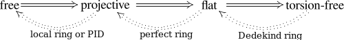
vector space
- vector space. module over a field
- for \(S\in T\) where \(S\) linearly independent and \(S\) generates \(V\), we have a base \(S\subset B\subset T\)
- proof using Zorn’s lemma, and that field has all inverses
- all basis has same cardinal
fix me: general proof- dimension well-defined
- \(\dim V = \dim W + \dim V/W\)
- \(\dim V = \dim {\text{Ker }}f + \dim {\text{Im }}f\)
- we proof by picking basis in both image and kernel, and picking a set by pullback the basis in image, we show that they generate \(V\) and the basis is independent, which are all trivial
- if \(K\) is a field with absolute value, and \(E\) a vector space over \(K\), then we can define norm by
- \(|v|\geq 0\) and \(|v|=0\Leftrightarrow v=0\)
- \(|xv| = |x||v|\)
- \(|v + w| \leq |v|+|w|\)
- for \(S\in T\) where \(S\) linearly independent and \(S\) generates \(V\), we have a base \(S\subset B\subset T\)
fix me: page 30 of algebraic geometry notes, about dual and equvilance of finite dimensional vector space, 1.2C and 1.2.D
fix me: the section about general algebras in page 121
exercises
- \(\dim U + \dim W = \dim (V + W) + \dim(U\cap W)\). trivial by extending basis
- free module over commutative ring has determined rank. follow the hint
*multi by \(x\) is a injective vector space isomorphism, so we have one \(xy =1\)fix me- trivial
fix me- trivial
fix me
fix me
polynomial
first part is using the language of single variable polynomial, but they also works for several variables
- polynomial over a commutative ring
- group ring . so polynomial is a monoid ring of \({\mathbb{Z}}^+\)
- \(p: \{X^0, X^1, X^2, X^3, \dots\}\to R\) where \(R\) is a ring and the function equals 0 on all but finite number
- primitive polynomial
- monomial
- evaluation function \(A[X]\) with \(A\subset B\) is ring, we have function \({\text{ev}}_v: A[X]\to A[v]\) that makes \(X=B\)
- if \({\text{ev}}_v\) is a isomorphism, we say that \(v\) is transcendental over \(A\)
- \(\sqrt{2}\) is not transcendental over \(Z\), \(e\) and \(\pi\) is
fix me: a proof?
- \(\sqrt{2}\) is not transcendental over \(Z\), \(e\) and \(\pi\) is
- if \({\text{ev}}_v\) is a isomorphism, we say that \(v\) is transcendental over \(A\)
- reduction map \(A[X]\to B[X]\) a map induced on coefficients
- \(f:A\to B\) uniquely extends to a \(A[X]\to B\) such that \(X\to x\in B\), by first reduction and then evaluation on \(x\)
- degree of polynomial \(-\infty, 0, 1\) etc
- if the leading coefficients is not zero divisor, we have \({\text{deg}}(fg)={\text{deg}}(f)+{\text{deg}}(g)\) and if \(A\) is entire, we have \(A[X]\) entire
- \({\text{deg}}(f+g)\leq \max({\text{deg}}(f), {\text{deg}}(g))\)
- algebraically independent \(x_1, \dots, x_n\in B\) is algebraic independent if evaluation map is injective
- not known if \(e\) and \(\pi\) is algebraically independent, if \(e+\pi\in {\mathbb{Q}}\)
open problem
- not known if \(e\) and \(\pi\) is algebraically independent, if \(e+\pi\in {\mathbb{Q}}\)
- homogeneous
- \(\Leftrightarrow\) \(f(ut_1, \dots, ut_n) = u^df(t_1, \dots, t_n)\)
fix me: the group ring and monoid ring part- Euclidean algorithm \(f = pq+r\)
- over a field \(k\)
- \(k[X]\) is Euclidean ring, thus pid and factorial ring
- has at most \(n\) roots in \(k\), and if \(a\) is a root, then \(X-a\) divides \(f(X)\). proof by factoring
fix me: a lot is omitted. because we are only considering Galois theory on fields now- power series
exercises
fix me
algebraic equations
field extensions
- fields, \({\mathcal{Fld}}\)
- examples: number fields. number fields is subfield of \({\mathbb{C}}\) and it is an extension of \({\mathbb{Q}}\)
- morphism. ring morphisms, and they must be injective, (there are no trivial field), because there are only one proper ideal and it is trivial
- characteristic of field. the ring characteristic, it is either 0 or \(p\) prime
- subcategory structure. if \(k\subset K\), then same characteristic. we have category \({\mathcal{Fld}}_0\), \({\mathcal{Fld}}_p\), and \({\mathbb{Q}}\) is initial in \({\mathcal{Fld}}_0\), and \(F_p\) is initial in \({\mathcal{Fld}}_p\)
- \([E:F]\) the dimension of extension
- view \(E\) as a vector space over \(F\)
- finite extension, infinite extension
- \([E:K]=[E:F][F:K]\), and \(\{x_i y_j\}\) is a base
- the proof is very easy by construct the base and proof independent
- \({\text{Aut}}_k(F)\) automorphisms that is fixed in \(k\)
- simple extensions \(\exists \alpha: k\subset k(\alpha)= F\)
- \(\epsilon: k[X]\to k(\alpha)\) evaluate on \(\alpha\)
- \(\epsilon\) injective \(\Leftrightarrow\) \(k\subset k(\alpha)\) is infinite extension and \(k(\alpha)\) is isomorphic to field of rational functions \(k(X)\). transcendental
- \(\epsilon\) is not injective \(\Leftrightarrow\) \(k\subset k(\alpha)\) is finite extension, and we have an minimal polynomial \(p(X) \in k[X]\) of degree \([k(\alpha): k]\) and \(k(\alpha)\cong \frac{k[X]}{(p(X))}\). algebraic
- the structure of extensions between two field
- examples: \({\mathbb{Q}}(-\sqrt{2})\cong{\mathbb{Q}}(\sqrt{2})\cong \frac{{\mathbb{Q}}[X]}{(X^2-2)}\to {\mathbb{R}}\). but the left embedding is not unique, see the left two. and the dimension thing should be of base \(1\) and \(\sqrt{2}\)
- and even the image is not unique, consider \({\mathbb{Q}}[X]/(X^3-2)\to {\mathbb{C}}\). two is dense, one is not
- picture them! the first is Galois extension, the second is not
- 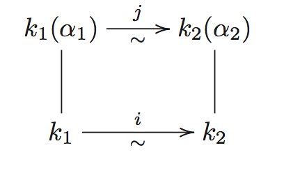
- \(k\subset F=k(\alpha)\), \(|{\text{Aut}}_k(F)|\) is distinct roots of \(p(x)\) the minimal polynomial
- the automorphism is determined by value at \(\alpha\)
- algebraic extension. every element of \(E\) is algebraic over \(F\)
- a finite extension is an algebraic extension. so simple extension of type 2 is algebraic
- \(k\subset k(\alpha)\subset F\)
- algebraic elements is a field, and an algebraic extension. for example \(\bar{{\mathbb{Q}}}\), algebraic numbers, and it is also an example of algebraic extension which is not a finite extension
- a finite extension is an algebraic extension. so simple extension of type 2 is algebraic
- finitely generated extension \(k\subset F= k(\alpha_1, \alpha_2, \alpha_3)\)
- finite extension is finitely generated extension generated by the basis!
- finite extension \(\Leftrightarrow\) algebraic extension \(\Leftrightarrow\) each \(a_i\) is algebraic over \(k\). proofed trivially
- and it says things like if \(\alpha\), \(\beta\) is algebraic, then is \(\alpha + \beta\) etc. how can you construct the polynomial?
fix me - see book for example \({\mathbb{Q}}\subset {\mathbb{Q}}(\sqrt{2}, \sqrt{3})\)
- distinguished extensions can be chained (two direction) \(k\subset F\subset E\), lifted, pulled up
- the pulled up part can be proofed by first two
- algebraic extensions
- one direction is trivial. the other, consider a minimal polynomial of \(\alpha\in E\) over \(F\), then \(F_0 = k(a_n, \dots, a_0)\) is finite over \(k\) and \(\alpha\) is algebraic over \(F_0\) so \(F_0(\alpha)\) is finitely generated algebraic extension, thus finite, and we have \(k\subset F_0(\alpha)\) is finite thus algebraic, so the \(k\subset E\) is algebraic
fix me
- finite extensions
- dimension formula
- the finite extension is finite generated algebraic extension, so we can see that the lifted \(EF\) is finite generated algebraic extension. proofed
- finitely generated extensions
fix me
- algebraic closed
- every polynomial in \(L[X]\) degree \(\leq 1\) has root in \(L\)
- all irreducible polynomials has degree 1
- \(K\) has no nontrivial algebraic extensions
- if \(K\subset L\) is any extension, and \(a\in L\) is algebraic over \(K\), then \(a\in K\)
- algebraic closure. algebraic closed . algebraic extension
- exists and unique
- splitting field for a polynomial \(f(x)\in k[X]\)
- normal extension \(k\subset F\), every irreducible polynomial \(f(x)\in k[X]\) has a root in \(F\) \(\Leftrightarrow\) \(f(x)\) splits as a product of linear factors of \(F\)
- normal extension + finite extension \(\Leftrightarrow\) splitting field extension
real field
- ordering of field we define a set of positive elements over a field. such that \(x\in P\) or \(x=0\) or \(-x\in P\) and \(x+y\in P\), \(xy\in P\)
- \(1\in P\)
- \(1 + 1 + 1 + \dots + 1 \in P\), so \(K\) has characteristic \(0\)
- \(x^{-1}\in P\)
- we define \(x < y\) as \(y-x\in P\)
- real field \(-1\) is not a sum of squares of \(K\)
- real closed it is real and any algebraic extension of it is trivial
absolute value
- absolute value on field \(K\)
- def: a real function \(|\cdot|\)
- \(|x|\geq 0\), \(|x|=0\Leftrightarrow x = 0\)
- \(|xy| = |x||y|\)
- \(|x+y| \leq |x| + |y|\)
- absolute value dependent if they defines same topology
- \(|1|=|-1|=1\), \(|-x| =|x|\), \(|x^{-1}| = |x|^{-1}\)
- def: a real function \(|\cdot|\)
linear algebra and representations
we assume \(R\) be a commutative ring
- \(m\times n\) matrix in ring \(R\) a doubly finite indexed family of elements in \(R\)
(|m -n)- as a \(R\) module: \(A+B\), \(cA\)
- transpose \(A'\). \((A+B)' =A' + B'\), \((cA)'=cA'\)
- \(AB\). \((AB)' =B'A'\)
- for square matrixs of \(n\times n\), form a ring
- \(R\to {\text{Mat}}_n(R)\)
- trace \({\text{tr}}(A) = \sum(a_{ii})\)
- \({\text{tr}}(AB) = {\text{tr}}(BA)\)
- for a ring homomorphism \(\varphi:R\to R'\), we have
- \(\varphi(A+B) = \varphi A+\varphi B\)
- \(\varphi(AB) = \varphi A \varphi B\)
- \(\varphi(cA) = \varphi(c)\varphi A\)
- \(\varphi(A') = \varphi(A)'\)
- they are all trivial
- for field \(k\)
- rank of matrix
- the number of independent row vector and column vector is same
- rank of matrix
references
- ref-algebra-lang Algebra, Serge Lang
- ref-algebra-comp A Companion to Lang’s Algebra
- ref-algebra-course. algebra course at Berkeley
- ref-algebra-course-2 http://math.berkeley.edu/~serganov/114
- ref-algebra-0 Abstract Algebra: Chapter 0, Paolo Aluffi
- it use more category
- ref-algebra-atiyah An Introduction to Commutative Algebra
topological space
idea
it describe what we means by a space, which has a notation of nearness of points, which means the point have some extension, so infinite extension will destroy it
topological space
- topological space \(\mathcal{U}\)
- object. topological space
- set, \(A\)
- open sets \(\mathcal{T}\)
- closed set
- \(\{A, \emptyset\} \subset \mathcal{T}\)
- \(\mathcal{T}\) closed under finite intersection and any union
- morphism. continuous function
- path. from interval
- loop
- \(c_x\) constant loop
- \(f\cdot g\) the path that…
- \(f^{-1}\) the path that…
- it is not groupid, because the inverse is not groupid inverse, but that’s true in homotopy space
- loop
- monomorphism and epimorphism is reduced from set
- isomorphism. homeomorphism is not reduced from set!
- path. from interval
- related function
- open map
- closed map
- neighborhood
- continuous at point
- subspcae, relative topology
- interior point, exterior point, boundary point, adherent point, limit point, every neighbor meets \(A -\{b\}\), isolated point
- interior, exterior, boundary , closure
- \({\text{Cl }}S \cup {\text{Cl }}T = {\text{Cl }}(S \cup T)\)
- \({\text{Cl }}(S\cap T)\subset {\text{Cl }}S\cap {\text{Cl }}T\)
- there are two kind of method to gain something, and they are commutative, but when talking about lose and gain, they are not!
- dense \({\text{Cl }}S = X\)
- base, subbase
- refinement, finer topology, coarser topology
- weak topology by \(f\)
- product. set product with weak topology for projection
- coproduct.
- object. topological space
- pointed space \(\mathcal{T}\)
- object. topological space like pointed set
- morphism. continuous map closed by basepoint
connectedness
- connected space
- preserved by morphism
- has common point… prop 2.3
- \(S\) connected \(\Rightarrow\) \(S\subset T\subset {\text{Cl }}S\) connected
- product preserve connectedness
- actually I can proof by using the product base, and for infinite space, it is easier…
- path connected space. all points connected by path
- a space is connected space but not path connected: comb
- arc connected space. all points connected by homeomorphism
- example of path but not arc. \(0\) and \(0'\) in \({\mathbb{R}}^+\), from Wikipedia
- Hausdorff space they are equal
- locally path connected
- locally path connected + connected \(\Rightarrow\) path connected
- a example of path connected but not locally path connected
separation axioms
- $T_1$ space two point separated by open set
- Hausdorff space two different point has disjoint open neighborhoods
- any seq has at most one limit
- subspace of Hausdorff space is Hausdorff
- regular space
- normal space …
- subspace of normal space not necessary normal
- compact Hausdorff space is normal
- compact disjoint subset of Hausdorff space has disjoint neighborhood \(\Rightarrow\) (compact Hausdorff \(\Rightarrow\) normal)
countability axioms
- second countable space has countable base
- separable has countable dense set
compactness
- compact space any open covering has finite subcovering \(\Leftrightarrow\) any family of closed set have finite intersection property \(\Rightarrow\) infinite intersection is also non-empty
- what means? travel by open cover?
- morphism compactness
- relatively compact closure is compact
- closed subspace of compact is compact
- compact subspace of Hausdorff space is closed
- Tychonoff's product preserve compact
- sequentially compact every sequence has a point of accumulation
- you are not going too far away!!!
- so actually compact is a stronger condition!
- this def is not same as the Wikipedia one!!!
- compact \(\Rightarrow\) seq compact
- in second countable space compact = seq compact
- proof: open cover => countable cover => unique point cover => must finite => if not => acc point!
- locally compact space every point has an compact neighborhood
filter
- filter on set \(X\). a set of subsets such that, \(A\in \mathcal{F}\land A\subset B\Rightarrow B\in \mathcal{F}\), closed by finite intersection, \(\emptyset \notin\mathcal{F}\)
- example
- \(X\) itself, which must be in any filter
- subsets containing a subset
- neighborhoods
- finer filter, coarser filter
- closed under non-empty intersection
- example
uniform structure
we should have general completion of a topological space, which will include the completion of vector space? and then we should define real number as the completion of \({\mathbb{Q}}\)
the Cauchy structure, uniform function structure can be defined in uniform space, not just metric space, but we do not consider them here
- uniform structure of \(X\) is subsets of \(X\times X\) called entourages which satisfy first two axiom of a filter and \(A\in \mathcal{U} \Rightarrow \Delta \subset A\), \(V\in \mathcal{U}\Rightarrow V^{-1}\in\mathcal{U}\), \(\forall V\in \mathcal{U}\exists W: W\circ W\subset V\)
- it is completely regular
topological group, ring and field
- topological group \(x\times y\) and \(x^{-1}\) is continuous
- topological group is uniform space
- topological ring addition and multiplication is continuous
topological vector space
- topological vector space, \({\mathcal{TVS}}_K\), addition and scalar multiplication is continuous
real number
we define real number as the completion of rational numbers \({\mathbb{Q}}\). \({\mathbb{Z}}\) and \({\mathbb{Q}}\) is all initial in certain algebraic categories. it is initial in complete real ordered field.
separation by continuous functions
- \(X\) normal space
- \(A\) closed, \(U\) open then \(A < U_1 < {\text{Cl }}U_1 < U\)
- Urysohn's lemma \(A\), \(B\) be closed disjoint subset, then separable by continuous functions in \([0, 1]\) with, \(f(A) = 0\) and \(f(B) = 1\)
- the locally compact Hausdorff case
- Tietze extension
metric space
- metric space
- \(d(a, b): T\to {\mathbb{R}}\)
- positive and \(d(a, b) = 0 \Leftrightarrow a = b\)
- \(d(a, b) = d(b, a)\)
- \(d(x, y) \leq d(x, z) + d(z, y)\)
- open ball, closed ball, sphere
- Cauchy seq
- seq converge
- Cauchy complete. Cauchy seq converge
- continuous at point is \(\delta\) \(\epsilon\)
- is normal space
- metric equivalence give same topology
- \(C_1|x|_1 \leq |x|_2 \leq C_2|x|_1\)
- metric space can always embedded into nvs
- how about a discrete metric??
- totally bounded exists finite open ball of \(r\) cover for all \(r\)
- compact \(\Leftrightarrow\) seq compact \(\Leftrightarrow\) complete and totally bounded
- proof: metric => seq compact == compact => complete && totally bounded || the proof is intricate!, it should really be a memorized technical lemma!!
- subset of complete metric space (totally bounded \(\Leftrightarrow\) relatively compact)
- \(f\) continuous on compact set has max
- \(f: A \to F\) compact subset of metric space to metric space
- continuous = uniform continuous. proof using \(r\) has min, because it is compact
- compact metric space is separable
- \(d(a, b): T\to {\mathbb{R}}\)
normed vector space
- normed vector space over \({\mathbb{R}}\) or \({\mathbb{C}}\)
- define a function to \({\mathbb{R}}\)
- \(|x| \ge 0\) and only \(= 0\) if \(x = 0\)
- \(|cx| = |c||x|\)
- \(|x+y| <|x| + |y|\)
- all norm is equivalent
- examples
- sup norm
- uniformly cauchy, uniformly convergent
- \(L^1\)-norm
- Euclidean norm on \({\mathbb{R}}^n\) and \({\mathbb{C}}^n\)
- \(l^p\)-norm
- \(L^p\)-norm Lebesgue spaces
- http://en.wikipedia.org/wiki/Norm_(mathematics)
- sup norm
- normed vector space locally compact \(\Leftrightarrow\) finite dimensional
- in \({\mathbb{R}}^n\) compact \(\Leftrightarrow\) closed and bounded
- example of incomplete normed vector space http://math.stackexchange.com/questions/209665/series-in-incomplete-normed-space
- one point compactification
- \(B(S, F)\) space of bounded maps to nvs
- \(C(S, F)\) space of continuous maps to nvs
- \(BC(S, F)\) space of bounded continuous maps to nvs
exercise from ref-topology-lang
references
- ref-topology-exercise General Topology Exercise Textbook
- ref-topology-lang Real and Functional Analysis, Chapter 2
homotopy space
idea
homotopy space
it is only about maps between them now, i think eventually we will have space = groupoid or soemthing fix me: when you understand
- homotopy. \(h: X\times I\to Y\) such that \(h(x, 0) = f(x)\), \(h(x, 1) = g(x)\)
- why there is the interval? because deformation of space must in time?? what is time???
- then it means that homotopy in discrete space is always uninteresting
- there is a functor from space to the homotopy space \(h\mathcal{U}\)
- object. same
- morphism. continuous function to the homotopy class
- isomorphisms is \(f \cdot g \simeq {\text{id}}\) things, which is called homotopy equivalence in \(\mathcal{U}\)
- contractible. isomorphism to 0
- makes the functions between them a lot more simple, and introduced so many isomorphisms
- a functor from pointed space to pointed homotopy space, \(h\mathcal{T}\)
- object. same
- morphism. it is just like viewed as a product space in homotopy space, which keeps basepoint always fixed
- the fundamental group . functor factor though pointed homotopy space
- an based homotopy equivalence induce an isomorphism in fundamental group, which is just trivial
- is there exist two continuous function that can only be homotopy in \(h\mathcal{U}\) but not \(h\mathcal{T}\), i.e. only exist homotopy that moves basepoint in the middle of the transform
fix me
fundamental groupoid
- fundamental groupoid. functor from space \(\mathcal{U}\) to groupoid \(\mathcal{GP}\)
- object. groupoid by taking \([f]\) the homotopy class of path \(f\) in the paths from \(x\) to \(y\), it is not just homotopy of the path considered as \(I \to X\), in a type theory view, this might be easy, for we can consider it be the type
Path(X, x, y)- \(f: x \to y\), \(g: y\to z\)
- \([g][f] = [g\cdot f]\), notice the order
- \([f]^{-1} = [f^{-1}]\)
- it is a groupiod
- \([f]^{-1}[f] = [f^{-1}f] = [c_x]\)
- morphism. induced?
- structure
- a path in it makes two local group . conjugate
- \(S^1\), by two path, morphism \({\text{id}}\)
- \(S^1\vee S^1\), by two path, morphism is
a => a && b => a^-1ba - if the group is abelian then we have an unique . isomorphism between the two local group, this do not means there are only one element in the groupoid
- this is restatement in fundamental group
- for a path connected space, the fundamental groupoid is groupoid connected, which is a special case of connected category, so it is category equivalence to the skeleton category of fundamental groupoid, which is fundamental group
- a path in it makes two local group . conjugate
van Kampen for groupoid, fundamental groupoid preserve colimit certain
- \(\mathcal{O}\) be a cover of space \(X\) by path connected . open sets, closed under finite intersection
- as a category morphism are inclusions of subsets, gives a diagram \[\Pi | \mathcal{O}: \mathcal{O}\to\mathcal{GP}\]
- the groupoid \(\Pi(X)\) is the colimit of the diagram \[\Pi(X)\cong colim_{U\in \mathcal{O}}\Pi(U)\]
- the proof is very natural
- it do not factor though homotopy space, this is simple, think contractible space. so fundamental groupoid is redundant with internal structures, and fundamental group is redundant with external isomorphisms. they are kind of two viewport
an example of two different space maps two same groupoid: two point space with discrete topology and one-point-only topology
- object. groupoid by taking \([f]\) the homotopy class of path \(f\) in the paths from \(x\) to \(y\), it is not just homotopy of the path considered as \(I \to X\), in a type theory view, this might be easy, for we can consider it be the type
fundamental group
- functor from pointed space \(\mathcal{T}\) to group \(\mathcal{G}\)
- object. contstruct as fundamental groupoid, but only keep loops
- morphism. \(p: X\to Y\) to group homomorphism, \(p_*: \pi_1(X, x)\to \pi_1(Y, y)\) by \(p_*[f] = [p\circ f]\), it is well defined for the law of composition
- van Kampen for fundamental group
- first by skeleton category, we proof for finite case, it is because we need a base to inductively define the reverse \(J\) for skeleton category
- then it is proofed for infinite version
fix me
- product is preserved, it is proofed by universal property but
fix me - i think there are many homotopy class on \(S^1 \times S^1\to S^1\times S^1\), examples are projection, id, and swap, but some are not path induced
- the isomorphisms for different basepoint . spaces. in summary, basepoint changing results in isomorphism, some of them will have unique isomorphism, and when the group is abelian, it is unique. but this is not isomorphism in pointed space, it is reduced to morphism in space, then project to group
- \(a\) a path, \(\gamma[a]\) the homomorphism to move point
- \(\gamma[a][f] = [a\cdot f \cdot a^{-1}]\)
- it only depends on the homotopy class of \(a\)
- it is isomorphism with inverse \(\gamma[a^{-1}]\)
- if the group is abelian we have \(\gamma[b][f] = \gamma[a][f]\), you should view the structure in the groupoid, and switch basepoint
- so there are \(n\) kinds of path induced isomorphism between \(\pi_1(X,x)\) and \(\pi_1(X, y)\) where \(n\) is the number of homotopy class of the path between the two point, so one homotopy class means one isomorphism is path induced, and then we can use this way to identity two group
- isomorphism by morphism in homotopy space. an isomorphism in homotopy space is a class of morphisms in pointed space, and by this class of morphism, you get isomorphism in group
- isomorphism by isomorphism in homotopy space. again, they are not isomorphism in pointed space, but reduced. isomorphism in homotopy space is class of (because of the homotopy) class of (because adding basepoint) morphism in pointed space, each of them is isomorphism. if \(f:X \to Y\) is iso in homotopy space then \(f_*: \pi_1(X, x) \to \pi_1(Y, f(x))\) is isomorphism for all \(x\)
- simply connected fundamental group is zero and path connected
- it has little thing to do with contractible
examples and exercises
- for contractible space, the fundamental group is 0
- \(\pi_1(\mathbb{R}) = 0\)
- \(\pi_1(S^1) = \mathbb{Z}\)
- p20 proposition and exercises bellow, i do not know how to compute the push outs…
fix me: not understand the pushout now
from ref-at-concise
- The Brouwer fixed point theorem
- The fundamental theorem of algebra
- exercises
fix me, i do not know what’s the \(deg\) and what’s topological group - for real projective space
fix me
covering space
we assume all space considered is locally path connected and connected
- covering space \(p: E\to B\)
- surjective
- each \(b\in B\), has open . neighborhood \(V\), such that each disjoint component of \(p^{-1}(V)\) is open and mapped homeomorphically onto V by \(p\)
- so it should not “go back” in the middle?
- fundamental neighborhood. path connected . open
- totally space
- base space
- fiber of covering \(p\)
unique path lifting
- \(p: E\to B\) and \(b\in B\), \(e,e'\in F_b\)
- a path \(f: I\to B\) lefts uniquely for every \(e\) such that \(g(0) = e\) and \(p\circ g = f\). the proof is actually easy
- equivalent path lifts to equivalent path, and hence \(g(1)=g'(1)\). proof \(p\circ h: I\times I \to B\), compact, fundamental cover, finite cover, project back, base, finite cover, grid, grow the border (a old square only can all include the line or include nothing, so you can grow it!), inductively define the homotopy
- regular covering. \(p_*\) project to normal group
- universal covering. simply connected cover
- for a universal cover, \(F_b\) are in bijective with \(\pi_1(B, b)\)
- for \(n \geq 3\), \(\mathbf{R}P^n\) covered by \(S^n\), then we can see that \(\pi_1(\mathbf{R}P^n) =2\)
covering groupoid
- coslice category of the groupoid
- star of \(x\), \(St(x)\)
- covering of groupoid
- surjective
- restricts to bijection \(p:St(e)\to St(p(e))\) for each \(e\)
- the def of covering groupoid is just the useful properties of covering space. above can be reformulated as induced functor \(\Pi(p):\Pi(E)\to \Pi(B)\) of cover space \(p\) induce a covering groupoid
- \(p_*: \pi_1(E, e)\to \pi_1(B,b)\) is monomorphism and base changing group is conjugate, and as one runs though \(e'\), we runs through conjugate groups in \(\pi_1(B,b)\)
- examples: i suspect all finite cover will leave the fundamental group unchanged, but in the infinite circle case, we can see that it is really monomorphism, because \(e\) back, then \(b\) must back, but not reverse
- i cannot found a example that is really non-trivial conjugate, they are all surjective or not moving, i can found an example it is non-trivial subgroup, just when you cannot come back by something. for a non-trivial conjudate, see ref-at-hatcher
- run though conjugate, but still not the whole group sometimes
- regular covering groupoid. \(p(\pi(\mathcal{E}, e))\) is normal subgroup of \(\pi(\mathcal{B}, b)\)
- universal covering groupoid. \(p(\pi(\mathcal{E}, e)) = \{e\}\)
- translation function \(T(b): \mathcal{B}\to \mathcal{Set}\) (the set of fibers at a point), \(T(f)\) is a morphism in \(\mathcal{Set}\) which depends on \(f\) will have different behaviour
- fibers has same cardinality
- groupoid actionin covering groupoids
- the isotropy group of \(e\) is \(p(\pi(\mathcal{E}, e))\)
- it is transitive groupoid action
- so \(F_b \cong \pi(\mathcal{B}, b)/ p(\mathcal{E}, e)\). this means bijection? we do not know it is normal now
- if the covering is universal covering groupoid, then \(F_b\cong \pi(\mathcal{B}, b)\)
classification of covering of groupoids
- category of groupoid covering of \(\mathcal{B}\), \({\text{Cov}}(\mathcal{B})\)
- object. groupoid coverings
- morphism. \(g:\mathcal{E}\to\mathcal{E'}\) is a map of covering if only \(p = p'\circ g\)
- they are also covering! proof for surjection, and bijection
- when exist?
- a functor \(f: \mathcal{X}\to \mathcal{B}\) reduce functor \(g: \mathcal{X}\to\mathcal{E}\) and compute only if \(f(\mathcal{X}, x_0)\subset p(\mathcal{E}, e_0)\)
- when two covering same as above, then there exists an unique covering. and …
- universal covering groupoid is unique up to isomorphism and covering all other covers
- they are bijective to \(G\)-maps \(F_b\to F_b'\)
- \({\text{Aut}}(\mathcal{E})\) is isomorphic to group of isomorphism of \(F_b\) and so \(W_{p(\pi(\mathcal{E}, e))}\). if \(p\) is regular, then …, if universal. then \(G\)
construction of covering groupoids
fix me: i do not want to read!!! a covering theorem, such a long way!!
classification of covering of space
fix me: totally sick
example
- real projective space
- the real projective space \(\mathbb{R}P^n\) is obtained by gluing antipodal points of \(S^n\)
references
- ref-at-concise A Concise Course in Algebraic Topology
- ref-at-hatcher Algebraic Topology, Hatcher
real and functional analysis
idea: integration is kind of infinite sums, we require the infinity be small, i.e., our sum is not too big, and we need a group structure to do the adding
we use \({\mathbb{F}}\) stands for \({\mathbb{R}}\) or \({\mathbb{C}}\)
continuous functions on compact spaces
- i’d like to know the importance of these theorems, because they seems so arbitrary
- for \(B(S,F)\) using sup-norm
- \(F\) complete \(\Rightarrow\) \(B(S,F)\) complete
- \(BC(S, F)\) is closed in \(B(S, F)\)
- \({\mathbb{F}}\) valued algebra of functions on \(X\)
- \(fg\in A\), \(f+g\in A\), \(cf\in A\)
- example of algebra: \(C(X)\), polynomials
- separates points
- Stone-Weierstrass theorem on compact set \(S\) an algebra \(A\) of \({\mathbb{R}}\)
- separate points \(\land\) contains constant \(\Leftrightarrow\) uniform closure is \(C(S)\)
- complex version, \(A\) additionally self conjugate, same result
- proof: first under the max, min, we can approx using compact(for each point, construct an all lower function, then using them to get an all upper function), second, we can approx abs using polynomials. in complex version, we have conjugate to proof the real valued ones separate points, then we use real valued to approx complex valued
- ring of real or complex valued functions
- \(Z_f\) zeros of a continuous function is closed
- \(Z(J) = \bigcap Z_f\)
- \(X\) an compact space, \(R\) ring of \({\mathbb{F}}\) valued continuous function on \(X\), with sup norm. \(J\) a closed ideal. \(f \in R \land f(x) = 0 \forall x \in Z(J)\Rightarrow f \in J\)
- it created a semi-constant in \(J\)
- understand what the theorem says, if you have a ideal, then almost all function that has the zeros of the ideal will in the ideal!!!
- complex version requires additionally self conjugate
- equicontinuous of \(O\subset C(X, F)\) at \(x_0\), \(X\) is subset of metric space and \(F\) is Banach space. \(\forall e, \exists t (d(x, x_0) < t \Rightarrow \forall f \in O: |f(x)-f(x_0)| < e)\)
- Ascoli's theorem \(X\) compact subset of metric space, \(F\) a Banach space, \(O\) subset of \(C(X,F)\) with sup-norm (\(O\) is relatively compact in \(C(X,F)\) \(\Leftrightarrow\) \(O\) is equicontinuous \(\land\) \(\forall x \in X, O(x)={f(x)}\) is relatively compact)
- it is that you can use open ball if they are about as one function: same rate and not too far away in values
exercises
- proof that \(C(S, F)\) complete, where \(S\) is metric space, and \(F\) is Banach space. \(BC(S,F)\) is closed in \(B(S, F)\)
- construct by pointwize limit, then proof continuous (replace \(f\) by a very close continuous function, that’s why you have sup norm), then proof that it converge
- bounded by \(\sup f = \sup \lim f_n(a)\)
- you should convince yourself that using limit is ok because no matter how complex the function space is, it is a complete normed vector space
- trivial
- what’s the point of Hausdorff? if we are using conditions in 1, then it is that we can use extension to get a representation in \(R\), i think it is just that?
- trivial
- trivial
fix mefix mefix me- omitted
fix me- compact metric space \(X\), then \(C(X, {\mathbb{F}})\) is separable. follow the hint, use SW on a countable algebra
- tensor products are dense
fix me: finish after this
Banach spaces
fix me: the image of continuous linear map is not necessary closed
we assume \(E\) and \(F\) is normed vector space
- Banach space. complete normed vector space
- \({a_n} \ge 0\) such that \(\sum a_n\) converges (in Banach space \(\forall n, |x_n| \leq a_n\) then \(\sum x_n\) converges)
- continuous linear map \(L(E, F)\), where \(E\), \(F\) is normed vector space
- linear map on vector space \(T(ax_1+bx_2) = aT(x_1) + bT(x_2)\)
- \(l: E \to F\) continuous \(\Leftrightarrow\) \(\exists C > 0 \forall x \in E: |l(x)| \leq C|x| \)
- example of non-continuous linear map: http://en.wikipedia.org/wiki/Linear_map#Continuity http://en.wikipedia.org/wiki/Discontinuous_linear_map
- \(C\) is bound of \(l\), \(l\) is bounded
- finite dimensional to normed vector space is always continuous, they are trivially bounded
- norm of linear map. lub of all \(|l(x)|\) on \(S_1\)
- \(|u\circ v| \leq |u||v|\) for \(L\) map composition
- so it is an normed vector space
- \(F\) complete \(\Rightarrow\) \(L(E, F)\) complete
fix me - operator \(E \to E\) continuous linear map
- toplinear isomorphisms \({\text{Lis}}(E, F)\)
- automorphism \({\text{Laut}}(E)\)
- isometry toplinear and \(|u(x)| = |x|\)
- bilinear for normed vector space \(E\), \(F\), \(G\), \(l: E \times F \to G\) is linear for two components
- bilinear continuous \(\Leftrightarrow\) \(|l(x, y)|\leq C|x||y|\)
fix me - norm of bilinear, \(L(E, F; G)\)
- and \(G\) complete \(\Rightarrow\) \(L(E, F; G)\) complete
- examples: matrix mul, dot product, cross product
- isometry between \(L(E, L(F, G))\) and \(L(E, F; G)\)
- bilinear continuous \(\Leftrightarrow\) \(|l(x, y)|\leq C|x||y|\)
- multilinear map
- dual space \(L(E, {\mathbb{F}}) = E'\), functionals on \(E\)
- complete, because \(F\) is complete
- Hahn-Banach theorem subspace \(F\) of real nvs \(E\), \(l: F\to {\mathbb{R}}\) a functional, then has same bound extension on \(E\)
- extension of continuous linear functionals
- in nvs \(E\), \(v \neq 0\) \(\Rightarrow\) \(l(v) \neq 0\) exists
- in \({\mathbb{C}}\) case
- dual dual space \(E''\)
- \(f_x: E' \to {\mathbb{F}}\) such that \(f_x(l) = l(x)\), then \(x\to f_x\) is linear map and injective and norm preserve. it is not necessary surjective
- \(|f_x| \leq |x|\), left is bounded by right, expand by definition!
- \(|f_x| \ge |x|\), the bound is bigger than \(|x|\), find one at least \(x\)!, \(x = f_x({\text{id}}) \leq |f|\)
- this is, you evaluate at bigger value of a linear map, you get bigger!
- weak$^*$ topology on \(E'\) is determined by \(\{f_x\}\)
- Alaoglu's theorem \(E\) a Banach space, then \(E'_1\) is compact for the weak\(^*\) topology
- the proof is by mapping it to the graph, but it is rather wired
fix me - notice that \(E'\) has standard topology by norm, the relation
fix me
- the proof is by mapping it to the graph, but it is rather wired
- \(f_x: E' \to {\mathbb{F}}\) such that \(f_x(l) = l(x)\), then \(x\to f_x\) is linear map and injective and norm preserve. it is not necessary surjective
- algebra. vs \(A\) and multiplication: bilinear
- cross product in \({\mathbb{R}}^3\) not associative normed algebra
- normed algebra. associative algebra on normed space \(\land\) \(|uv| \leq |u||v|\)
- Banach algebra. normed algebra and complete
- bounded functions by multiplication of function
- \(A\) Banach algebra with unit \(e\), invertible elements is open in \(A\), and if \(|v| < 1\) then \(e+v\) is invertible
- the proof is rather wired
- \(u \to u^{-1}\) is continuous
- \(E\) and \(F\) Banach space, then \({\text{Lis}}(E, F)\) is open in \(L(E, F)\)
- \(L(Z, Z)\) is Banach algebra by composition
fix me
- \(E\) nvs, \(F\) subspace of \(E\), \(G\) Banach space, continuous linear map \(l: F \to G\) has unique linear extension \(\bar{l}: \bar{F} \to G\) on the closure of \(F\) that has same norm
- example of open subspace? think functional
- this is kind of like Hahn-Banach theorem, but the codomian is wider…?
fix me: finish the proof
- completion of normed vs \(E\) unique exists
fix me
- operators
- \(S\)-invariant subspace
- \(B\) commute with \(S\) \(\Rightarrow\) kernel and image is \(S\)-invariant
- direct sum
- if \(A\) is an operator on \(E\), we are interested to express \(E\) as direct sum of \(A\)-invariant subspaces!
exercises
- \(F\) complete then \(L(E,F)\) complete. the 0 of former chapter deals with continuous functions under sup norm, this one deals with linear function under the specific norm, which is certainly not the sup norm
- pointwize convergence to \(l\), linear by \(\lim l_n(ax + by) = a\lim l_n (x) + b \lim l_n(y)\)
fix me, and bounded the same…?
- pointwize convergence to \(l\), linear by \(\lim l_n(ax + by) = a\lim l_n (x) + b \lim l_n(y)\)
fix me: finish after this
Hilbert space
we use vs over \(C\), and assume our product is positive
- forms
- antilinear \(l(ax)=\bar{a}l(x)\)
- sesquilinear form \(E\times E \to C: {\langle x, y \rangle}\) linear in \(x\) and antilinear in \(y\)
- hermitian . scalar product \(\land\) \({\langle x,y \rangle} = \bar{{\langle y,x \rangle}}\)
- positive form hermitian \(\land\) \({\langle x,x \rangle} \geq 0\)
- positive definite form positive \(\land\) \({\langle x,x \rangle} = 0 \Leftrightarrow x = 0\)
- orthogonal \({\langle u,w \rangle} = 0\)
- null space \(E_0\) for hermitian
- \({\langle w,w \rangle} = 0 \Rightarrow w \in E_0\)
- seminorm
- \(L^2\)-norm is a seminorm
- Schwarz inquality \(|{\langle u, w \rangle}| \leq |v||w|\)
- unit vector
- Fourier coefficient of \(v\) with respect \(w\). unique \(c\): \(<v - cw, w> = 0\) if \(|w| \neq 0\)
- \(v - c_1 v_1 - c_2 v_2 - \cdots - c_n v_n\) perpendicular to \(v_i\) when they are mutually perpendicular
- \(|w + u|^2 = |u|^2 + |w|^2\) when prependicular
- \(|w + u|^2 + |w - u|^2 = 2|w|^2 + 2|u|^2\)
- total family union of finite generated space is dense in \(E\)
- orthogonal
- orthonormal
- Hilbert basis total and orthonormal family
- \(v_i\) orthogonal, then \(|x - \sum (c_k v_k)| \leq |x - \sum(a_k v_k)|\)
- pre-Hilbert space vs \(\land\) positive definite hermitian form
- Hilbert space per-Hilbert and complete under \(L^2\)-norm
- closed subspace of Hilbert space, a point out’s min dis correspond point in it
- theorem 1.6 closed subspace has perpendicular point!
- exists Hilbert basis
- \(E = F + F^\perp\)
- orthogonal projection
- you get a point in generated space of countable closed perpendicular subspaces \(F_i\) by projections…
- orthogonal decomposition
- Bessel inqeulity
- \(l_y = {\langle x,y \rangle}\) is functional, \(y \to l_y\) is norm-preserving, antilinear isomorphism
- \({\text{End}}(E)\) operators = continuous linear map
- \(\text{Sesqu}(E)\) continuous sesqu form
- \(\text{Herm}(E)\) all continuous hermitian forms
- \(A \to \pi_A\) is norm preserving isomorphism between \(End(E)\) and \(\text{Sesqu}(E)\)
- adjoint on Hilbert space, transpose on Hilbert space \(<Ax, y> = <x, A^* y>\)
- \((A+B)^* = A^* + B^*\), \(A^{**} = A\), \((aA)^* = \bar{a}A^*\), \((AB)^* = B^*A^*\)
- sesquilinear form \(\pi\) then \(q(x) = \pi(x, x)\) is quadratic form
- complex Hilbert space, \({\langle Ax, x \rangle} = 0 \Rightarrow A = O\)
- fails in real: rotation
- \(A = A^*\) hermitian, self-adjoint
exercises
fix me
the general integral
- measurable space
- object. measurable sets defined by $\\sigma$-algebra
- countable union and complement
- generated \(\sigma\) algebra
- Borel measurable generated by open sets
- an algebra is finite union
- morphism. measurable maps inverse of measurable set is measurable set
- closed by composite, which means is an category
- for Borel measurable, only check for open sets is sufficient
- we assume Borel measurable from now on
- \(f = (g, h)\), f \(\Rightarrow\) \(g\), \(h\). \(g\), \(h\) and every open set in \(Y\times W\) is countable union of the product base \(\Rightarrow\) \(f\)
- complex function \(\Leftrightarrow\) parts
- \(f\) is measurable to nvs, then \(|f|\), composite with
fix meabsolute value function
- \(af+bg\), \(fg\) into complex is measurable, similar for finite dimensional space
- \(f\) is \(X\) into metric space, and \(f_n\) pointwize convergence to \(f\) is measurable, then \(f\) is
- simple map disjoint finite union of constant function on measurable sets
- finite dimensional \(\Leftrightarrow\) pointwize limit of simple maps
- \(f: X\to{\mathbb{R}}^+\) positive real valued map, then \(f\) is pointwise limit of some increasing sequence of simple maps
- object. measurable sets defined by $\\sigma$-algebra
- measure space \((X, \mathcal{M}, \mu)\)
- object . positive measure, \(u: \mathcal{M} \to [0, \infty]\), countably additive
- Dirac measure
- counting measure
- closed by \(A_n \subset A_{n+1}\), \(\bigcup A_n\) limit
- closed by \(A_{n+1} \subset A_n\), \(\mu(A_i) < \infty\), \(\bigcap A_n\) limit
- almost everywhere
- step map \({\text{St}}(\mu, E)\) finite valued and finite measured
- is a vector space, also closed for \(|f|\)
- \(\sigma\)-finite: countable union of finite measure sets
- \(\mu\)-measurable: pointwise limit of step maps almost everywhere
- vanish outside \(\sigma\)-finite set
- is a vector space. closed by continuous bilinear map product, \(|f|\) closed, \(1/f\) closed for \(f \neq 0\)
- \(\Leftrightarrow\) exists \(\mu(Z) = 0\) that \(f|(X-Z)\) measurable, \(f\) vanishs outside a \(\sigma\)-finite set, and \(f(X-Z)\) contains a countable dense set
- if \(u\) is \(\sigma\)-finite and \(f\) into \({\mathbb{C}}\) then only requires \(f|(X-Z)\) measurable!
- limit of \(\sigma\)-measurable is \(\sigma\)-measurable
- so \(\sigma\)-measurable is preserved under standard ops, without composition
- object . positive measure, \(u: \mathcal{M} \to [0, \infty]\), countably additive
we assume that \((X, \mathcal{M}, \mu)\) is an measured space, and \(E\) an Banach space
- integral of step functions \(\int_X f {\text{ d}}\mu = \sum \mu(A_i)f(A_i)\)
- \(\int_A f {\text{ d}}\mu = \int_X f_A {\text{ d}}\mu\)
- \(\left|\int_X f {\text{ d}}\mu\right| \leq \|f\|_1 \leq \|f\| \mu(A)\)
- \(L^1\)-siminorm
- \(L^1\)-completion \({\text{St}}(\mu) \to L^1(\mu)\)
- this is the equivalence class of Cauchy seq of step functions that convergence under \(L^1\) norm
- there is \(L^1\)-Cauchy sequence that are not pointwise convergence
- there are pointwise convergence sequence that are not \(L^1\)-Cauchy??
- why we cannot use this definition using null-seq to proof? i think for me, it just means… forget this shit…
- \(\mathcal{L}^1(\mu)\) spaces has almost everywhere convergence \(L^1\)-Cauchy sequence
- is a vs
- fundamental lemma of integration a Cauchy seq of step maps \(\{f_n\}\) has a subseq convergence pointwise almost everywhere, and convergence absolutely and uniformly outside any \(\mu(Z) < \epsilon\)
- \(g_n\) and \(h_n\) Cauchy seq of step maps, convergence almost everywhere to same map
- \(\lim \int_X g_n = \lim \int_X h_n\)
- \({g_n - h_n}\) is null seq
- integrable maps of \(\mathcal{L}^1(\mu)\), \(\int_X f {\text{ d}}\mu = \lim\int_X f_n{\text{ d}}\mu\)
- \(|f|\in \mathcal{L}^1(\mu)\)
- \(|f_n|\) approximate \(|f|\)
- \(\|f\|_1 = \lim \|f_n\|_1\)
- \(\mathcal{L}^1\) is complete
- relation of \(\mathcal{L}^1(\mu)\) and \(L^1(\mu)\)
- \(\gamma: \mathcal{L}^1\to L^1\)
- it is well defined, it is not injective
- \(\|f\|_1 = \|\gamma(f)\|_1\)
- \(\int_x f = \int_x \gamma(f)\)
- integral on \(\mathcal{L}^1\) is continuous linear map
fix me: show that there are integrals etc defined on $L^1$
- for \(E = {\mathbb{R}}\)
- \(\sup(f, g) = \frac{1}{2}(f + g + |f-g|)\) is integrable
- \(f = f^+ + f^-\) then \(f\) \(\Leftrightarrow\) \(f^+\) and \(f^-\)
- is increasing function
- for \(A\in \mathcal{M}\), \(f_A\)
- \(\left|\int_X f {\text{ d}}\mu\right| \leq \|f\|_1 \leq \|f\| \mu(A)\)
- theorem 4.1, 4.2
fix me
fix me
exercises
fix me
duality and representation theorems
some application of integration
integration on locally compact spaces
Riemann-Stieltjes integral and measure
distributions
integration on locally compact groups
differential calculus
inverse mappings and differential equations
reference
- ref-analysis-real-and-functional Real and Functional Analysis, Serge Lang
- ref-rf-class solutions for above book http://www.math.wustl.edu/~victor/classes/ma5051/
- ref-analysis-tao An Epsilon of Room
- very intuitive!!!
statistics
probability
formal definition in measure theory
i have not read any books about this, but you can get much insight from wikipedia articles
- http://en.wikipedia.org/wiki/Random_variable#Measure-theoretic_definition
- probability space - measured space with total measure 1
- random variable - function from measured space to measurable space, thus the latter measurable space can get an measure from the preimage
- so what is a cdf? it is the measure function, so actually
Rcan have various measures - so pdf is not in favour, because it is not a good measure, it only coresponds to differentiable measure
- so what is a cdf? it is the measure function, so actually
- conditional - induced normalized measure for subspace
- fix me the conditional and join random variables is not well understood in the perspective now…
probability
- sample space, point: outcome, event, subset: events
- probability
- sigma-algebra, measurable space
- non-neg
- unity
- sigma-additivity
- what it means?
- freq
- Bayesian
- in my opinion it do not matters… the model is there, it is just a matter of calculation
- but it do lead to different methods
A_n -> A => P(A_n) -> P(A): using def, and measure, and properties of limits- review: this is the proposition 1 in the positive measure section
P(A|B) = P(AB) / P(B)- is this kind of submeasure?
- event independent
P(AB) = P(A)P(B)P(A|B) = P(A)
- Bayes’ theorem
P(B) = Sum( P(B|A_i)P(A_i) )is just set ops + simple probobilityP(A_i|B) = P(B|A_i)P(A_i) / P(B)P(A_i)the prior probability ofAP(A_i|B)the posterior probability ofA
random variables
they are functions on a measure space to R, and you get a measure on R
the so called multivarance is just linear algebra + rv
if you do not consider the distribution, then what random variable means is that it is normal variables, but you can add them, try to picture youself X-bar/n
join dis is defined by P, consider youself the join dis of X and 1-X? you cannot picture this! but it do has a cpf! it start at the diag from 0 to 1, but is is not differentable! (what is 2 differentable?)
- random variable
X: space toR P(X in A) = P(X^-1(A))P(X = x) = P(X^-1(x))- cumulative distribution function
F_X(x): R -> [0, 1] = P(X <= x)- theorem 2.7: CDF determines the probability structure
- review: the induced measure is same! not the rv! for exmaple.
f_1 = xandf_2 = -xfor a normal - so we must remember that, the function that induced the random variable is always essential
- review: the induced measure is same! not the rv! for exmaple.
- theorem 2.8:
R -> [0,1]is cdf <=>- non-decreasing
F(-inf) = 0andF(inf) = 1F(x) = lim_{y -> x, y > x} F(y)- review: this actually concerned with that cdf is defined
P(X <= x), it is a asymetry
- review: this actually concerned with that cdf is defined
P(X = x) = F(x) - F(x-)P(x < X <= y) = F(y) - F(x)
- theorem 2.7: CDF determines the probability structure
- inverse cdf
F^-1(q) = inf(x: F(x) > q)- if
Fis strictly increasing and continuous, then it is just function inverse - a simple example: try to picture the inverse of a normal
- if
- probability function
f_X(x) = P(X = x) - probability density functiion:
F_X(x) = integral from -inf to x f_X(t) dt- if such a function exists,
Xis called continuous Fis differentiableP(X = x) = 0, this is necessory, because you can using integral!!!- pdf can be unbounded
- review: a pdf exists relays on the underline measure space to is differentiable, so it concerns about linearity, so it concerns if it is
Ror something
- if such a function exists,
- join pf and join cpf
- consider multivarance normal, so two join has far more different shapes, it is what it means to have a sample space, but when it is independent, we can see it is uniquely defined
- independent always means factorable
- pdf of
(X, Y) - marginal probability function
f_X(x),f_Y(y) - marginal cdf
F_X,F_Y - marginal density
f_X(x) = integral f(x, y) dy X,Yindependent:forall A, B: P(X in A, Y in B) = P(X in A)P(Y in B)- for differentialbe <=>
f_X,Y = f_X f_Y - independence of random variable means we can factor the sample space, and reguard the two variable only dependent on one subspace!
- for differentialbe <=>
- conditional pf:
f_{X|Y}(x|y) = P(X = x| Y = y)ifP(Y = y) > 0 - conditinal pdf:
f_{X|Y}(x|y) = f_{X|Y}(x|y) / f_Y(y)P(X in A| Y = y) = integral_A f
- tranform random variable, or variables => variable
- actually it is always about calculation of a pdf or cdf
- iid sample
functional
functionals from the function space to R
- median
F^-1(1/2) E(X) = integral x dF(x) = EX = mu_X- if you have two variable, you need two integral. thinking the num of rv as the dimension!!! picture youself a multivariance nomral
- well defined:
integral |x| dF(x) < inf E(r(X)) = integral r(x) dF(x)E(Sum(a_i X_i)) = Sum(a_i E(X_i))- dirrectly proofed from lineary of integral, but I need better real analysis
X_iindependent =>E(Prod(X_i)) = Prod(X_i)- think of integral when id, the integral will be independent
E(a'X) = a'mu,E(AX) = A mu
- k-th moment
E(X^k)- well defined for k
- k-th moment exists => j < k exists
- variance
sigma^2 = E(X-mu)^2 = V(X)- think of a dis, and the mu is a y = mu thing, it will be a lot easy!
- standard deviation
sd(X) = sqrt(V(X)) = sigma V(X) = E(X^2) - mu^2V(aX+b) = a^2V(X), obvious when you thinking the lineX_iindependent =>V(Sum(a_i X_i)) = Sum(a_i^2 V(X_i)), use the same method in expectation
- skewness
k = E(X - mu)^3/sigma^3 - covariance
Cov(X, Y) = E((X - mu_X)(Y - mu_Y))- corelation
rho = Cov(X, Y) / sigma_X sigma_Y Cov(X, Y) = E(XY) - E(X)E(Y)- use the two var thing!!!
-1 < rho < 1, expand the integral- when
XandYis linear or independent V(X + Y) = V(X) + V(Y) + 2Cov(X, Y)V(Sum(a_i X_i)) = Sum(a_i^2 V(X_1)) + 2 SumSum a_i a_j Cov(X_i, X_j)
- variance-covariance matrix
Pi V(a'X) = a' Pi a,V(AX) = A Pi A'
- corelation
- conditional exception
E(X|Y = y) = integral x f dx,E(r(X,Y)| Y = y) = integral r(x, y) f dxis a random variable ofy- law of total exception:
E(E(r(X,Y)| X)) = E(r(X,Y)) - this is a funcional that F(R^2) -> F(R)
- law of total exception:
- conditional variance
V(Y|X = x) = integral (y - mu(x))^2 f(y|x) dy- law of total:
V(Y) = EV(Y|X) + VE(Y|X)- proof?
- law of total:
- moment generating functions, Laplace transform
chi_X(t) : R -> R = E(e^(tX))- fix me
X_iidd- sample mean
X_n-bar = Sum(X_n) / n - sample variance
S_n^2 = Sum((X_i - X_n-bar)^2) / (n - 1) E(X_n-bar) = muV(X_n-bar) = sigma^2 / nE(S^2) = sigma^2- it means it is unbiased
- really cmompute this thing! it is easy!
- sample mean
useful examples of rv
- multivarance normal fix me
inequalities
- Markov’s:
X,t> 0 =>P(X > t) <= E(X) / t - Chebyshev’s
P(|X-mu| >= t) <= sigma^2 / t^2andP(|(X-mu)/sigma| >= k) <= 1/k^2 - Hoeffding’s fix me
- Mill’s
- Cauchy-Schwartz
E|XY| <= sqrt(E(X^2)E(Y^2)) - Jensen’s
gconvex =>Eg(X) >= g(EX)
convergence of rv
they are just normal convergence in functional analysis
http://en.wikipedia.org/wiki/Convergence_of_random_variables
- p: converges in probability
forall e, P(|X_n - X| > e) -> 0 as n -> 0- add, mul, map
- d: converges in distribution
lim F_n(t) -> F(t), pointwize- const add, const mul, map
- qm: converges in quadratic mean
E(X_n - X)^2 -> 0- add
- qm => p => d
- special case: point mass d <=> p
- weak law of large numbers:
X_n-bar -P-> mu - clt:
Z_n = (X_n-bar - mu)/sqrt(V(X_n-bar)) = sqrt(n)(X_n-bar - mu)/sigma -d-> N(0, 1)- variance -> sample variance is ok
- multivariate version
sqrt(n)(X-bar - mu) -d-> N(0, Pi) - delta method:
sqrt(n)(Y_n - mu) / sigma -d-> N(0, 1)&&gdifferentiable andg'(mu) != 0=>g(Y_n) -d-> N(g(mu),g'(mu)^2 * sigma^2 / n)- multivariate delta method fix me
stochastic process
- stochastic process, state space, index set
- Markov chain
f(x_1,...,x_n) = f(x_1)f(x_2|x_1)...- qestions
- when settle down
- parameter estimate
- how to construct to converge
- qestions
- homogeneous
- transition probabilities, transition matrix
p_ij(n)n-step transition probabilitiesp_ij(m + n) = Sum( p_ik(m) + p_kj(n) )
- simulation,
mu_0initial distributionmu_n = m_0 P^n
- reaches, communicate (is a equvilent)
- irreducible, closed states, absorbing state
- recurrent = persistent, transient
- recurrent <=>
Sum (p_ii (n)) = Inf - communicate preserve recurrent and transient
- finite Markov chain must has one recurrent state, if it is irreducible, all state is recurrent (simple)
- recurrent <=>
- decomposition theorem: state space
X = X_T \/ X_i,X_Tis trans,X_iis irreducible recurrent (just use partition) - recurrent time (a rv):
T_ij = min{n | X_n = j}- mean recurrent time
m_i = E(T_ii) = Sum(n f_ii(n))
- mean recurrent time
- null, positive recurrent state
- null ->
p_ii(n) -> 0 - finite state -> all positive
- null ->
- period
d = gcd{n|p_ii(n) > 0}- periodic:
d > 1 - aperiodic:
d = 1
- periodic:
- ergodic = recurrent & positive & aperiodic (state | chain)
- e.g. 23.28 Example
- stationary = invariant
- stationary not necessory to converge!!!
- limitint distribution
P^n -> [pi; pi; pi; ...], herepiis a vector!!! - irreducible, ergogic Markov chain has unique stationary distribution
pi, limiting distribution is alsopi,gbounded =>lim_N Sum(g(X_n))/N -> E_pi(g) = Sum(g(j) pi) - detailed balance
pi_i p_ij = p_ji pi_j- detailed balance => stationary distribution
- fix me 23.31
- Possion processes fix me
statistical inference
statistical inference is not solving equtions, because you have noise, you cannot get exact input/output, and so nomrally your knowns is not the degree of freedom of the system!!! and you do not solve exactly!!! they are not same problem at all!!!
statistical inference
theory of inference
- kinds of inference model: given
X_ithe sample rv- non-parametric model
FE(X)- this is of course simpler, because we applied a very concentrating function- …
- parametric model
paramemters- same asF, because we have a smaller search space forFfor we have constrains, so we have a function to map parameters toFs- sometimes we estimate functional of estimators…, mostly
EandV
- non-parametric model
- statistical model, parametric model, parameter space, nuisance parameters
- predictor = regressor = feature = independent variable, outcome = response = dependent v
- parameter regression model, nonparametric regression model (infinite-dim regression), prediction, classification, regression = curve estimation
- freq inference, Bayesian inference
- point estimation
theta_n-head = g(X_1,...,X_n)for somegis a random variablebias(theta_n-head) = E_theta(theta_n-head) - theta, unbiased- this is a scalar, it is a statistical functional applied to a rv, so a saclar!!!
- consistent
-p-> - sample distribution
- standard error
se = sqrt(V(theta_n-head))is applied value! again a salar! - ese
se-head - 6.8 - see a worked out example for Bernoulli!
- when calculating
V(p^n), useX^2and independence expansion!
- when calculating
MSE = E(theta^_n - theta)^2 = bias^2 + V_theta- this is not the variance of
theta^_n! this is only true when you are unbias!!!
- this is not the variance of
- e.g
- parameter
- cdf
bias -> 0 && se -> 0 => MSE -> 0 => -pm-> => -p->- asymptotically normal
(theta_n-head - theta) / se -> N(0, 1)
1-aconfidence intervalP(theta in C_n) >= 1-a,C_nis(a(X_1,...,X_n), b(...))is a random variable!!- confidence set: when multivariance
- normal-based confidence interval p94
- comparing 6.17 and 6.15, notice that normal-based only has large approximately correct coverage
- hypothesis testing
nonparameter mentods for cdf and functionals
I think we have enough error terms to do this! namely the convergence and bias!
- empirical distribution function
F_n-head(x)it isR -> F(R), given axit has a estimation of the value at thisx- at
xE(F-head) = F(x), is unbiasedMSE = V(F-head) = F(x)(1-F(x)) / nF_n-head(x) -P-> F(x), it is consistant
sup_x |F_n-head(x) - F(x)| -P-> 0F^_ngive the function space a measure, and sup translate this measure again into scalar, and it is porobility limit to 0- DKW inequality fix me
- confidence interval based on DKW
- at
- plug-in estimator of statistical functional
T(F):theta_n-head = T(F_n-head), a functional is takes a rv to value, then you plugin to get a rv again!!!- lienar functional
T(F) = integral r(x) d F(x),Tis linear in arguments! - plug-in estimator for linear funtional
T(F_n-head) = Sum(r(X_i)) / nis a rv! - and we want
sefor this rv… - in many cases…
T(F_n-head) ~ N(T(F), se-head^2), means that we have a good enough estimator! and how to understand right??? you should divide to the left youself!!! - then
1-aci isT(F_n-head) +- z_{a/2} se-head - e.g. it is just crazy… everything is rv!
- mean - estimator, se-estimator, confidence interval
- variance - plugin, sample variance
S^2_n - skewness
- correlation - sample corelation
- 7.15
- in paramter model, we has formula for errors, but in nonparamter model, we mostly use bootstrap method
- lienar functional
bootstrap method
in essence, bootstrap is just like plugin methods
- step
- estimate
V_F(T_n)byV_F^(T_n): if we can stop here, it is just plugin method - approximate
V_F^(T_n)by simulation
- estimate
- illu
- real world
F=>X_i=>T_n - bootstrap world
F^_n=>X*_i=>T*_n
- real world
fix me
parametric inference
if the world is a determined world, there is no noise at all, noise exists, is because our model is problamic or there is other things, but we think them as random
- the method of moments, assume
theta = (theta_1,..., theta_k)- moment
a_j = a_j(theta) = integral x^j d F_theta(x), note that it is an function of theta, because we are having unknown theta - sample moment
a_j-head = Sum(X_i^j) / n - method:
forall j in 1 -> k: a_(theta_n-head) = a_j-head, it haskunknown of rvs, and we can solve for to get the estimator - properties
- exits with probability tending 1
- consistent
- asympototically normal
- fix me not well understood
- moment
- maximum likelihood method
- most of the things bellow is from information theory!!!! so read them when have time!!!
- likelihood function
L_n(theta) = Prod(f(X_i; theta)), log-likelihood funtionl_n(theta) = log(L_n(theta)). give a param, get a rv - method: the thet a maximaze it! using derivative! you get an estimator!
- multivar: we need global maxima, can use partial to find
- properties (under certain regularity conditions of the model, rf http://en.wikipedia.org/wiki/Maximum_likelihood)
- consistent
- Kullback-Leibler distance, information gain
- first proof
M_nconverge to-D(theta*, theta), if convergence is uniform overtheta, then we can prooftheta^_n -p-> theta*
- equivariant
g(theta) - asymptotically normal
- score function
s(X;theta) = & log f(X; theta) / & theta - Fisher information
I_n(theta) = Sum( V_theta(s(X_i; theta)) ) I_n(theata) = nI(theta)I(theta) = E_theta(-s')se = sqrt(1/I_n(theta))se^(theta^_n - theta) / se^ -d-> N(0, 1)- asymptotic confidence interval
- score function
- asymptotically optimal: for large example, has smallest variance
- see exercise 2
- delta method
- the distribution is also equivariant, so interval
- approximately the Bayes estimator
- consistent
- multiparameter method fix me
- parametric bootstrap method
- numerical methods
- Newton-Raphson
- EM algorithm
- hidden variable
- maxiture of two normals
hypothesis testing
- we patition the parameter space into
Theata_0andTheata_1 H_0: theta in Theta_0null hypothesis, and alternative hypothesis- rejection region
R,Xbe a rv andR < Dom(X), we calculate a rv, and see if we reject the null hypothesis- it is normally form
R = {x: T(x) > c} - test statistic, critical value
- it is normally form
- type 1, 2 error
- power function, size, level
- simple hypothesis, composite hypothesis, two-sided test, one-sided test
- Wald test see book
- p-value =
inf {a: T(X^n) in R_a}, smallest level we can rejectH_0- large p-value can occur in two reason: true or test has low power!
- fix me
Bayesian inference
- Bayes theorem
f(theta|x) = f(x|theta)f(theta) / integral f(x|theta) f(theta) d theta f(theta|x^n) = L_n(theta)f(theta) / c_n- conjugate with model
- fix me
- what prior to use?
- ..
- fix me
dicision theory
how to? is it not just calculate the estimated error?
- how to choose estimator: decision theory
- decision rule = estimator, action = values of estimator
- loss function
- risk
R(theta, theta-head)- e.g. when you are using squared error… the risk is just mse!!!
- maximum risk
R-bar(theta-head) - Bayes risk
r(f, theta-head)
- Bayes rule, minimax ruleok
- fix me
models and methods
linear and logistic regression
- regression fuction
r(x) = b_0 + b_1 x - assuming
V(e_i|X = x) = sigma^2do not depend onx Y_i = b_0 + b_1 X_i + e_i,E(e_i|X_i) = 0sigmais also a paramter of the model!- fitted line
r-head(x) = b_0-head + b_1-head x - fitted values
Y_i-head = r-head(X_i) - residuals
e_i-head = Y_i - Y_i-head - residual sums of squares
RSS = Sum ( e_i-head ^2 ) - least square estimates: minimize rss, calculate them using dervi!
b_1-head = Sum( (X_i - X_n-bar)(Y_i - Y_n-bar) ) / Sum( (X_n - X_n-bar)^2 )b_0-head = Y_n-head - b_1-head X_n-barsigma^2-head = RSS / (n - 2)E(b-head|X^n) = (b_0; b_1)this is a constant function ofX^nV(b-head|X^n) =see the book, this means if you pickxs too close, you will have a very bad estimatese-head(b_0|X^n)andse-head(b_1|X^n)- consistant
- asymptotic normality
- approximate
1-ainterval is see book - Wald test
- under normal assumption, lse is mle
- prediction interval fix me
- multiple regression
- the model assumed when we know we are sampling from independent
xs!!!!
- the model assumed when we know we are sampling from independent
- model selection, overfitting, underfitting
- prediction risk, training error
C_pstatistic- fix me
- logistic regression
multivariate models
inference about independence
causal inference
directed graphs
undirected graphs
log-linear
nonparametric curve estimation
smoothing using orthogonal functions
classification
- classification = pattern recognition
- the estimation process is learning!
- input
X_i = (X_i1,..., X_id) in R^dis a n number of d-dim input, findh(R^d) -> - true error rate
L(h) = P(h(X) != Y) - eer
L_n-head(h) = Sum(I(h(X_i) != Y_i)) / n - regression function
r(x) = P(Y = 1| X = x)- it is a probability, because there might be other DOF in the model!!!
- Bayes classification rule
h* = 1 if r(x) > 1/2 - multi version
h(x) = argmax_k P(Y = k|X = x)P(Y = k|X = x) = f_k(x)pi_k / Sum( f_i(x)pi_i )pi_i = P(Y = i),f_i(x) = f(x|Y = i)
- ways?
- empirical risk mini
- regression
- density estimation
- Gaussian classifiers
- assume both are multivariate Gaussian see book
h*(x) = argmax_k( -1/2*log|Pi_k| - 1/2*(x-mu_k)'Pi_k^-1(x-mu_k) + log pi_k )- sample esimates
- qda
- simplification when
Pi_1 = Pi_0fix me, lda - Fisher lienar discrimination
- linear regression: model the
r(x)using a linear function!!!- relationship logi stic and lda
- parameters estimation!
- lr: discriminative learning
- lda: generative learning
- parameters estimation!
- relationship logi stic and lda
- density estimation and naive Bayes
simulation methods
- Monte Carlo integration
- Metropolis-Hastings algorithm
- Gibbs sampling
references
- ref-stat-all All of Statistics
information theory
from the book Elements of Information Theory
preview
- entropy of rv
H(X) = -Sum(p(x) lg p(x)) - mutual information
I(X;Y) = H(X) - H(X|Y) = Sum(p(x, y) lg(p(x, y)/p(x)p(y))) - communication channel, probability transition matrix
p(y|x)- capacity
C = max_{p(x)} I(X;Y) - e.g. noisy four-symbol channel
- capacity
- relative entropy
D(p||q) = Sum(p(x) lg (p(x)/q(x)))
basics
- conditional entropy
- chain rule
mathematical optimization
from Convex Optimization slides by Stephen Boyd, Wikipedia, etc.
refs
- http://en.wikipedia.org/wiki/Mathematical_optimization
- http://en.wikipedia.org/wiki/Hessian_matrix
- maximum likelihood for point esitimation… the \(f\) in it is the pdf… so it is resonable to assume the maximum… but in nn, we do not have this shit… and in linear regression, we have conditional likelihood
ideas
- what about mix them?
- what about start multi place, and discard on the way?
defs
- mathematical optimization problems: \(max\)
- maybe we should say that “computational” but not “symbolic”
- objective function = cost function = loss function
- order of approximation: order of magnitude of the error is \(O\left(x^{n+1}\right)\)
- in suitable case, expand by Taylor is ok
methods
nonlinear programming
\[y = f(x + \Delta x) \approx f(x) + J(x)\Delta x + \frac{1}{2} \Delta x ^T H(x) \Delta x\]
differ by how to eval Hessian, gradients
- Newton’s method: eval the Hessian, ie, find zero in the driv
- methods evaluate gradients or approximate gradients
- quzsi-Newton
- L-BFGS
- gradient descent
- conjugate gradients
- variable metric methods
- quzsi-Newton
references
problem solving
pages
- http://terrytao.wordpress.com/career-advice/solving-mathematical-problems/
- http://terrytao.wordpress.com/career-advice/there%E2%80%99s-more-to-mathematics-than-grades-and-exams-and-methods/
- http://terrytao.wordpress.com/2010/10/21/245a-problem-solving-strategies/
- https://plus.google.com/u/0/114134834346472219368/posts/Xdm8eiPLWZp
- The point is that even if the technique is doomed to fail, the precise point in the argument at which it fails can be very instructive, as it can delineate what portion of the problem can be handled
- http://terrytao.wordpress.com/career-advice/ask-yourself-dumb-questions-%E2%80%93-and-answer-them/
- Don’t just read it; fight it! Ask your own questions, look for your own examples, discover your own proofs. Is the hypothesis necessary? Is the converse true? What happens in the classical special case? What about the degenerate cases? Where does the proof use the hypothesis?
random puzzles
- the noodles probability
- consider the first pick
- 100 dice problem!
- consider the position \((n, m)\)
- from the above two, we can see that you should know where to start considering the problem
- the \(n\) man remember card problem
- it is not clear at all when considering this point, but you should consider the optimal solution when go on
- the gate program: can you make a circuit calculate the not of 3 variables using only 2
notgate and arbitraryandandorgates?- boolean function reduction! then you have a function that has no
notin it!
- boolean function reduction! then you have a function that has no
- the two kid cake problem
- it is a optimization problem!
minimize[ max(max(1-x,x), min(1-x,x)+1/2) ] - but in a more general form
min(1 - max( max(1-x1,x1) + min(1-x2, x2), min(1-x1,x1) + max(1-x2, x2) ) ) - if 3 cake, the same problem!!!
minimize[ max_first, max_second, max_last ] - for the general case, we need
- first, we need to know it has a eq point
- then we find it like above!
- it is a optimization problem!
- proof that you have \(n+1\) integers bellow \(2n\), always two relatively prime
- this takes Erdios 10 minutes